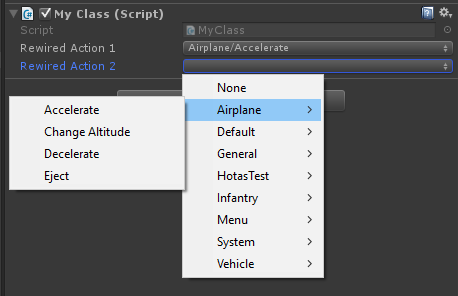
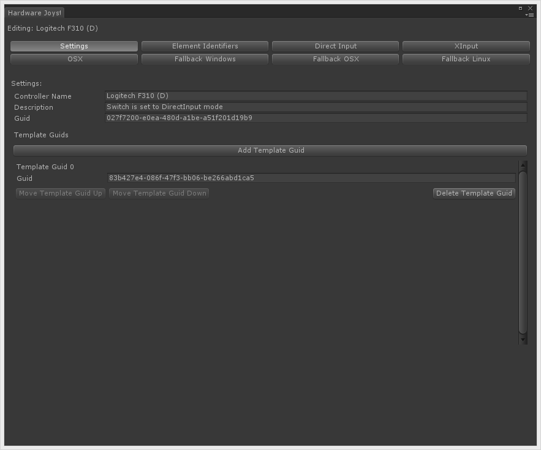

How To's
The following information was written under the assumption that you have already completely read and understood all documentation topics under Essentials and Concepts in the Documentation. If you have not done so, please do before continuing.
Topics:
- Important classes
- Getting a Player
- Getting input
- Getting a Controller
- Receiving Joystick connect and disconnect events
- Assigning Controllers to Players
- Enabling and disabling Controller Maps
- Managing Controller Maps at runtime
- Loading Controller Maps at runtime
- Displaying a button/axis/key name to the user for an Action
- Displaying a glyph for a Joystick element mapped to an Action
- Displaying a glyph for the currently active Joystick elements
- Getting contributing input sources for an Action
- Determining which Controller was last used
- Determining if a Controller is a Gamepad
- Handling Mouse and Joystick axes
- Calibrating Joystick axes
- Vibration/Rumble
- Handling button presses of various types
- Handling multi-button Actions
- Excluding certain Players from Joystick auto-assignment
- Changing configuration settings at runtime
- Converting scripts from UnityEngine.Input to Rewired
- Exporting constants for use in scripting
- Displaying a drop-down list of Actions in the inspector of a script
- Copying input configuration to another project
- Implementing a "Press Start to Join" Joystick assignment system
- Saving and loading Controller Maps
- Saving and loading Calibration Maps
- Modifying Input Behaviors during runtime
- Creating on-screen touch controls
- Creating a controller mapping screen
- Creating new controller definitions
- Creating new controller templates
- Adding a controller to an existing controller template
- Excluding controller definitions
- Identifying recognized Joysticks
- Identifying controllers on Windows fallback or Windows Webplayer platforms
- Hiding input settings on the Unity launcher
- Optimizing performance
- Using Rewired to control Unity's new UI
- Using Apple Siri Remote on Apple TV
- Using ArcadeGuns G-500 AimTrak Light Guns
- Using Sony DualShock 4 special features
- Using P.I. Engineering Rail Driver special features
- Using XBox One controller special features on XBox One platform
- Using PS4 gamepad special features on PS4 platform
- Using asmdef files with Rewired
Important classes
Rewired's API has been organized using helper classes to group methods and properties topically. This makes it easier to find the methods you are looking for through the IDE.
Global Information:
- ReInput - The main class for accessing all input-related information.
- ReInput.players - Players and Player-related information.
- ReInput.controllers - Controllers and controller-related information of all types.
- ReInput.mapping - Controller Map, Action, Input Behavior and other data in the Rewired Input Manager.
Player-Related Information:
- Player - Get input from the Player.
- Player.controllers - All Controller-related information in a Player.
- Player.controllers.maps - All Controller Map-related information in a Player.
More classes are listed in the API reference.
Getting a Player
Get a Player by id or name through ReInput.players.GetPlayer
More methods for accessing Players: ReInput.players
using UnityEngine;
using Rewired;
public class MyClass : MonoBehaviour {
public int playerId;
private Player player;
void Awake() {
// Get the Player for a particular playerId
player = ReInput.players.GetPlayer(playerId);
// Some more examples:
// Get the System Player
Player systemPlayer = ReInput.players.GetSystemPlayer();
// Iterating through Players (excluding the System Player)
for(int i = 0; i < ReInput.players.playerCount; i++) {
Player p = ReInput.players.Players[i];
}
// Iterating through Players (including the System Player)
for(int i = 0; i < ReInput.players.allPlayerCount; i++) {
Player p = ReInput.players.AllPlayers[i];
}
}
}
Getting input
There are four ways to get input in Rewired:
- Polling the Player for input - This is the most common method and is very similar to how you normally get input in Unity. This method uses the Player-Action system and has all the advantages that provides.
- Using Player input events - This method allows you to get input by registering for an event and receving a callback when that event takes place. This method uses the Player-Action system and has all the advantages that provides.
- Polling Controllers - This method ignores the Player-Action system and reads input directly from Controller Elements. This method is difficult to use and not recommended because you have to read input from axes and buttons by index.
- Polling Controller Templates - This method ignores the Player-Action system and reads input directly from Controller Template Elements. If you don't want to use the Player-Action system and you prefer programming to the Controller directly, it is recommended you use this method.
Get input through the Player class.
Rewired mirrors Unity's method nomenclature for getting input values:
- Player.GetButton - Gets the button held state of an Action. This will return TRUE as long as the button is held. This also applies to axes being used as buttons.
- Player.GetButtonDown - Gets the button just pressed state of an Action. This will only return TRUE only on the first frame the button is pressed or for the duration of the Button Down Buffer time limit if set in the Input Behavior assigned to this Action. This also applies to axes being used as buttons.
- Player.GetButtonUp - Get the button just released state for an Action. This will only return TRUE for the first frame the button is released. This also applies to axes being used as buttons.
- Player.GetAxis - Gets the axis value of an Action.
- There are many more methods available in the Player class.
All Actions can be queried for Button or Axis value regardless of the underlying hardware mapped to that Action.
using UnityEngine;
using Rewired;
public class MyClass : MonoBehaviour {
public int playerId;
private Player player;
void Awake() {
player = ReInput.players.GetPlayer(playerId);
}
void Update() {
if(player.GetAxis("Move Horizontal") != 0.0f) {
Debug.Log("Move Horizontal!");
}
if(player.GetButtonDown("Fire")) {
Debug.Log("Fire!");
}
}
}
Use delegates to receive input events from a Player. There are numerous overloads available that allow you to register to receive events on different update loops, for specific input event types, and for specific Actions. For a list of event types and whether they require additional arguments, see InputActionEventType.
public class MyClass : MonoBehaviour {
public int playerId;
private Player player;
void Awake() {
player = ReInput.players.GetPlayer(playerId);
// Add delegates to receive input events from the Player
// This event will be called every frame any input is updated
player.AddInputEventDelegate(OnInputUpdate, UpdateLoopType.Update);
// This event will be called every frame the "Fire" action is updated
player.AddInputEventDelegate(OnFireUpdate, UpdateLoopType.Update, "Fire");
// This event will be called when the "Fire" button is first pressed
player.AddInputEventDelegate(OnFireButtonDown, UpdateLoopType.Update, InputActionEventType.ButtonJustPressed, "Fire");
// This event will be called when the "Fire" button is first released
player.AddInputEventDelegate(OnFireButtonUp, UpdateLoopType.Update, InputActionEventType.ButtonJustReleased, "Fire");
// This event will be called when the "Jump" button is held for at least 2 seconds and then released
player.AddInputEventDelegate(OnJumpButtonUp, UpdateLoopType.Update, InputActionEventType.ButtonPressedForTimeJustReleased, "Jump", new object[] { 2.0f });
// The update loop you choose for the event matters. Make sure your chosen update loop is enabled in
// the Settings page of the Rewired editor or you won't receive any events.
}
void OnInputUpdate(InputActionEventData data) {
switch(data.actionName) { // determine which action this is
case "Move Horizontal":
if(data.GetAxis() != 0.0f) Debug.Log("Move Horizontal!");
break;
case "Fire":
if(data.GetButtonDown()) Debug.Log("Fire!");
break;
}
}
void OnFireUpdate(InputActionEventData data) {
if(data.GetButtonDown()) Debug.Log("Fire!");
}
void OnFireButtonDown(InputActionEventData data) {
Debug.Log("Fire!");
}
void OnFireButtonUp(InputActionEventData data) {
Debug.Log("Fire Released!");
}
void OnJumpButtonUp(InputActionEventData data) {
Debug.Log("Jump!");
}
void OnDestroy() {
// Unsubscribe from events when object is destroyed
p.RemoveInputEventDelegate(OnInputUpdate);
p.RemoveInputEventDelegate(OnFireUpdate);
p.RemoveInputEventDelegate(OnFireButtonDown);
p.RemoveInputEventDelegate(OnFireButtonUp);
p.RemoveInputEventDelegate(OnJumpButtonUp);
}
}
This method gets input directly from a Controller's buttons and axes. This is generally not the best choice as you will lose all the advantages of the Player-centric input system including mapping. Methods for accessing element values can be found in the respective Controller classes:
void LogMouseValues() {
Mouse mouse = ReInput.controllers.Mouse;
Debug.Log("Left Mouse Button = " + mouse.GetButton(0));
Debug.Log("Right Mouse Button (Hold) = " + mouse.GetButton(1));
Debug.Log("Right Mouse Button (Down) = " + mouse.GetButtonDown(1));
Debug.Log("Right Mouse Button (Up) = " + mouse.GetButtonUp(1));
}
void LogPlayerJoystickValues(Player player) {
// Log the button and axis values for each joystick assigned to this Player
for(int i = 0; i < player.joystickCount; i++) {
Joystick joystick = player.Joysticks[i];
Debug.Log("Joystick " + i + ":");
LogJoystickElementValues(joystick); // log all the element values in this joystick
}
}
void LogJoystickElementValues(Joystick joystick) {
// Log Joystick button values
for(int i = 0; i < joystick.buttonCount; i++) {
Debug.Log("Button " + i + " = " + joystick.Buttons[i].value); // get the current value of the button
}
// Log Joystick axis values
for(int i = 0; i < joystick.axisCount; i++) {
Debug.Log("Axis " + i + " = " + joystick.Axes[i].value); // get the current value of the axis
}
}
Method 4: Controller Template Polling
This method gets input directly from a Controller Template's elements. This is generally not the best choice as you will lose all the advantages of the Player-centric input system including mapping. However it does allow you to program for the controller. Methods for accessing element values can be found in the respective Controller Template interfaces.
Please see Controller Templates - Getting input directly for more information.
Getting a Controller
You generally don't need to get Controllers for normal gameplay input tasks, but there are certain times when you need to get a Controller such as during Controller remapping. There are a number of ways you can get Controllers.
To get a specific controller:
ReInput.controllers.GetController
player.controllers.GetController
player.controllers.GetControllerWithTag
You can get the mouse from:
ReInput.controllers.Mouse
player.controllers.Mouse
You can get the keyboard from:
ReInput.controllers.Keyboard
player.controllers.Keyboard
You can loop through all controllers:
ReInput.controllers.Controllers
ReInput.controllers.Joysticks
ReInput.controllers.CustomControllers
You can loop through controllers assigned to a Player:
player.controllers.Joysticks
player.controllers.CustomControllers
Receiving Joystick connect and disconnect events
To receive an event when a Joystick is connected, register for ReInput.ControllerConnectedEvent.
To receive an event when a Joystick is fully disconnected, register for ReInput.ControllerDisconnectedEvent.
To receive an event when a Joystick is about to be disconnected, register for ReInput.ControllerPreDisconnectEvent.
Note: Joysticks are not guaranteed to be available on Awake or Start on all platforms or input sources. If Joysticks are available immediately to Rewired on Awake, Joystick connected events will not be sent (technically, they will, but you cannot subscribe to Rewired's events before it initializes because of Rewired's script execution order, so you can't react to these events). If Joystick availability is delayed, a Controller connected event will be sent when Rewired detects the controller. If you need to check for the presence of Joysticks at the beginning of your game, you should check in both Awake or Start and by subscribing to the ReInput.ControllerConnectedEvent or enable deferred controller connected events. The "Defer Controller Connected Events On Start" option in Rewired Editor -> Settings will defer controller connected events for controllers already connected when Rewired initializes until the Start event so that you can subscribe to the ReInput.ControllerConnectedEvent in Awake and react to the events.
using UnityEngine;
using Rewired;
public MyClass : MonoBehaviour {
void Awake() {
// Subscribe to events
ReInput.ControllerConnectedEvent += OnControllerConnected;
ReInput.ControllerDisconnectedEvent += OnControllerDisconnected;
ReInput.ControllerPreDisconnectEvent += OnControllerPreDisconnect;
}
// This function will be called when a controller is connected
// You can get information about the controller that was connected via the args parameter
void OnControllerConnected(ControllerStatusChangedEventArgs args) {
Debug.Log("A controller was connected! Name = " + args.name + " Id = " + args.controllerId + " Type = " + args.controllerType);
}
// This function will be called when a controller is fully disconnected
// You can get information about the controller that was disconnected via the args parameter
void OnControllerDisconnected(ControllerStatusChangedEventArgs args) {
Debug.Log("A controller was disconnected! Name = " + args.name + " Id = " + args.controllerId + " Type = " + args.controllerType);
}
// This function will be called when a controller is about to be disconnected
// You can get information about the controller that is being disconnected via the args parameter
// You can use this event to save the controller's maps before it's disconnected
void OnControllerPreDisconnect(ControllerStatusChangedEventArgs args) {
Debug.Log("A controller is being disconnected! Name = " + args.name + " Id = " + args.controllerId + " Type = " + args.controllerType);
}
void OnDestroy() {
// Unsubscribe from events
ReInput.ControllerConnectedEvent -= OnControllerConnected;
ReInput.ControllerDisconnectedEvent -= OnControllerDisconnected;
ReInput.ControllerPreDisconnectEvent -= OnControllerPreDisconnect;
}
}
Assigning Controllers to Players
Joysticks
Joysticks will be assigned to Players automatically if you have enabled and configured Joystick auto-assignment in the Rewired Editor under Settings. However, if you wish to manually assign or unassign Joysticks, you can do so with the following methods:
Player class:
- player.controllers.AddController
- player.controllers.RemoveController
- player.controllers.ContainsController
- player.controllers.ClearControllersOfType
- player.controllers.ClearAllControllers
ReInput class:
- ReInput.controllers.IsControllerAssigned
- ReInput.controllers.IsControllerAssignedToPlayer
- ReInput.controllers.RemoveControllerFromAllPlayers
- ReInput.controllers.AutoAssignJoystick
- ReInput.controllers.AutoAssignJoysticks
Also, see Receiving joystick connect and disconnect events to get a notification when a Joystick is connected or disconnected.
// Example: Shows how to assign Joysticks manually to the next Player that doesn't have one assigned. void Awake() { // Listen for controller connection events ReInput.ControllerConnectedEvent += OnControllerConnected; // Assign each Joystick to a Player initially foreach(Joystick j in ReInput.controllers.Joysticks) { if(ReInput.controllers.IsJoystickAssigned(j)) continue; // Joystick is already assigned // Assign Joystick to first Player that doesn't have any assigned AssignJoystickToNextOpenPlayer(j); } } // This will be called when a controller is connected void OnControllerConnected(ControllerStatusChangedEventArgs args) { if(args.controllerType != ControllerType.Joystick) return; // skip if this isn't a Joystick // Assign Joystick to first Player that doesn't have any assigned AssignJoystickToNextOpenPlayer(ReInput.controllers.GetJoystick(args.controllerId)); } void AssignJoystickToNextOpenPlayer(Joystick j) { foreach(Player p in ReInput.players.Players) { if(p.controllers.joystickCount > 0) continue; // player already has a joystick p.controllers.AddController(j, true); // assign joystick to player return; } }
You can also use the joystick auto-assign system to automatically assign certain Joysticks while excluding others:
// Joystick Auto-Assignment is disabled in the Rewired Input Manager, but you can still use it to // assign one or all Joysticks at any time. void OnControllerConnected(ControllerStatusChangedEventArgs args) { if(args.controllerType != ControllerType.Joystick) return; // skip if this isn't a Joystick // Get the Joystick from ReInput Joystick joystick = ReInput.controllers.GetJoystick(args.controllerId); if(joystick == null) return; // Exclude the Apple Siri Remote -- it will be left unassigned // The Siri Remote's Hardware Type Guid is bc043dba-df07-4135-929c-5b4398d29579 // See this for more information on Hardware Type GUID. if(joystick.hardwareTypeGuid == new System.Guid("bc043dba-df07-4135-929c-5b4398d29579")) return; // Assign Joystick to first Player that doesn't have any assigned ReInput.controllers.AutoAssignJoystick(joystick); }
Keyboard
The Keyboard must be assigned to a Player before that Player can use it for input. However, the method of assigning the Keyboard to a Player differs from Joysticks.
To allow a Player access to the keyboard at the start of your game, you should check "Assign Keyboard on Start" in the Rewired Editor - Players page.
To assign the keyboard manually via scripting:
- player.controllers.hasKeyboard - Set to True to give the Player access to the keyboard.
Mouse
The Mouse must be assigned to a Player before that Player can use it for input. However, the method of assigning the Mouse to a Player differs from Joysticks.
To allow a Player access to the mouse at the start of your game, you should check "Assign Mouse on Start" in the Rewired Editor - Players page.
To assign the mouse manually via scripting:
- player.controllers.hasMouse - Set to True to give the Player access to the mouse.
Enabling and disabling Controller Maps
Controller Maps can be enabled or disabled at will via scripting. This can be useful if you want to change game modes and have a different set of controls become active. For example, opening a menu screen. Disabled Controller Maps will not return any value when the Player is queried for an Action's input value. Controller Maps are stored in the Player class.
The easiest way to enable and disable maps in a Player is to use the following methods:
- player.controllers.maps.SetAllMapsEnabled - Set enabled state on all maps owned by the Player or all maps for a specific Controller type.
- player.controllers.maps.SetMapsEnabled - Set enabled state on a group of maps owned by the Player by Controller type, Map Category, and Layout.
Example: Set enabled state on all of a Player's Controller Maps in a certain Map Category for all Controller types with one line of code.
// The quick way - one line of code
player.controllers.maps.SetMapsEnabled(state, categoryName);
NOTE: The above SetMapsEnabled and SetAllMapsEnabled methods are not persistent flags in Player that will set a certain category of map enabled/disabled upon loading. They are simply shortcuts for the below methods that iterate the maps currently loaded in the Player and set them enabled/disabled at the time the method is called. When new Controller Maps are loaded in the Player, either manually or when a Joystick is assigned, the newly loaded maps will be enabled/disabled based on the default enabled state settings for these maps on the Player page in the Rewired Input Manager, not based on previous calls to SetMapsEnabled.
You can also enable and disable maps one by one by getting the maps one by one:
- player.controllers.maps.GetMap
- player.controllers.maps.GetMaps
- player.controllers.maps.GetAllMaps
- player.controllers.maps.GetAllMapsInCategory
Once you have the map, enable or disable it by setting controllerMap.enabled = true or controllerMap.enabled = false. Disabled maps will not contribute to input.
Example: Set enabled state on all of a Player's Controller Maps in a certain Map Category for all Controller types one by one.
// The manual way - iterate all Controller Maps in a category and set the state manually foreach(ControllerMap map in player.controllers.maps.GetAllMapsInCategory(categoryName)) { map.enabled = state; // set the enabled state on the map }
Enabling and Disabling Action Element Maps
Individual Action Element Maps in each Controller Map can also be enabled and disabled:
// Disable all individual Action Element Maps in all Controller Maps in the Player foreach(ControllerMap map in player.controllers.maps.GetAllMaps()) { // Disable all Action Element Maps of all types foreach(ActionElementMap aem in map.AllMaps) { aem.enabled = false; } // Disable all Button Maps (these were already disabled above but this is just for illustration) foreach(ActionElementMap aem in map.ButtonMaps) { aem.enabled = false; } // Try disabling all Axis Maps if this is a Joystick Map (these were also disabled above) JoystickMap joystickMap = map as JoystickMap; if(joystickMap != null) { foreach(ActionElementMap aem in joystickMap.AxisMaps) { aem.enabled = false; } } }
Managing Controller Maps at runtime
Controller Maps can be added, removed, cleared, and reloaded during gameplay via scripting. This can be useful if you want to load the default Controller Maps as defined in the Rewired Editor after having made changes, or to load a Controller Map in a different Layout. Controller Maps are stored in the Player class.
Methods:
- player.controllers.maps.AddMap
- player.controllers.maps.RemoveMap
- player.controllers.maps.ClearAllMaps
- player.controllers.maps.ClearMaps
- player.controllers.maps.LoadMap
- player.controllers.maps.LoadDefaultMaps
- More methods for controller map management
Each Controller Map contains a list of Action Element Maps, which bind Actions to a specific elements on a Controller. Each ActionElementMap represents one binding. The various properties of the ActionElementMap determine the specifics of the binding, such as the elementType and elementIndex.
// Iterate over all Mouse Maps assigned to this Player and log the element type and index for each ActionElementMap foreach(var controllerMap in player.controllers.maps.GetMaps(ControllerType.Mouse, 0)) { foreach(var actionElementMap in controllerMap.AllMaps) { // iterate over all maps regardless of type InputAction action = ReInput.mapping.GetAction(actionElementMap.actionId); // get the Action from the binding // Log the element type, element index, and the Action name Debug.Log(actionElementMap.elementType + " " + actionElementMap.elementIndex + " is bound to " + (action != null ? action.name : "nothing")); } }
Loading Controller Maps at runtime
Before a Player can use a Controller Map, it first must be loaded into that Player. Controller Maps are loaded for each Player automatically at start (or, in the case of Joysticks, they are loaded when a Joystick is assigned to the Player) based on the Controller Map assignments you've made in the Players page of the Rewired Input Manager.
To assign the Controller Map at runtime via scripting or reload a default map (for example if you want to revert controls to the defaults), you would use the following methods to load a default Controller Map from the Rewired Input Manager into a Player.
Methods:
These methods load the Controller Maps you've created in the Rewired Input Manager into the Player. You can load Controller Maps that have not been assigned to the Player in the Rewired Input Manager or replace existing Controller Maps that are already assigned. Documentation about each overload can be found in the method links above.
// Re-load the keyboard maps that were assigned to this Player in the Rewired Input Manager player.controllers.maps.LoadDefaultMaps(ControllerType.Keyboard); // Load joysticks maps in each joystick in the "UI" category and "Default" layout and set it to be enabled on start foreach(Joystick joystick in player.controllers.Joysticks) { player.controllers.maps.LoadMap(ControllerType.Joystick, joystick.id, "UI", "Default", true); }
Displaying a button/axis/key name to the user for an Action
If you want to display some help text on the screen telling the user which button/key/axis to press for a particular Action, you can get this information from the ActionElementMap.elementIdenfitierName property. The following example shows various ways to get this information for an Action.
Player player = Rewired.ReInput.players.GetPlayer(0); // If set to true, only enabled maps will be returned bool skipDisabledMaps = true; // Get the first ActionElementMap of any type with the Action "Fire" Debug.Log(player.controllers.maps.GetFirstElementMapWithAction("Fire", skipDisabledMaps).elementIdentifierName); // Get the first button map with the Action "Jump" Debug.Log(player.controllers.maps.GetFirstButtonMapWithAction("Jump", skipDisabledMaps).elementIdentifierName); // Get the first axis map with the Action "Move Horizontal" Debug.Log(player.controllers.maps.GetFirstAxisMapWithAction("Move Horizontal", skipDisabledMaps).elementIdentifierName); // Loop over all ActionElementMaps of any type with the Action "Fire" foreach(var aem in player.controllers.maps.ElementMapsWithAction("Fire", skipDisabledMaps)) { Debug.Log(aem.elementIdentifierName); } // Loop over all button maps with the Action "Fire" foreach(var aem in player.controllers.maps.ButtonMapsWithAction("Fire", skipDisabledMaps)) { Debug.Log(aem.elementIdentifierName); } // Loop over all Axis maps with the Action "Move Horizontal" foreach(var aem in player.controllers.maps.AxisMapsWithAction("Move Horizontal", skipDisabledMaps)) { Debug.Log(aem.elementIdentifierName); } // All elements mapped to all joysticks in the player foreach(Joystick j in player.controllers.Joysticks) { // Loop over all Joystick Maps in the Player for this Joystick foreach(JoystickMap map in player.controllers.maps.GetMaps(j.id)) { // Loop over all button maps foreach(ActionElementMap aem in map.ButtonMaps) { Debug.Log(aem.elementIdentifierName + " is assigned to Button " + aem.elementIndex + " with the Action " + ReInput.mapping.GetAction(aem.actionId).name); } // Loop over all axis maps foreach(ActionElementMap aem in map.AxisMaps) { Debug.Log(aem.elementIdentifierName + " is assigned to Axis " + aem.elementIndex + " with the Action " + ReInput.mapping.GetAction(aem.actionId).name); } // Loop over all element maps of any type foreach(ActionElementMap aem in map.AllMaps) { if(aem.elementType == ControllerElementType.Axis) { Debug.Log(aem.elementIdentifierName + " is assigned to Axis " + aem.elementIndex + " with the Action " + ReInput.mapping.GetAction(aem.actionId).name); } else if(aem.elementType == ControllerElementType.Button) { Debug.Log(aem.elementIdentifierName + " is assigned to Button " + aem.elementIndex + " with the Action " + ReInput.mapping.GetAction(aem.actionId).name); } } } } // Log the keyboard keys assigned to an Action manually
foreach(ActionElementMap aem in player.controllers.maps.ButtonMapsWithAction(ControllerType.Keyboard, "ActionName", false)) { InputAction action = ReInput.mapping.GetAction(aem.actionId); if(action == null) continue; // invalid Action if(aem.keyCode == KeyCode.None) continue; // there is no key assigned string descriptiveName = action.descriptiveName; // get the descriptive name of the Action // Create a string name that contains the primary key and any modifier keys string key = aem.keyCode.ToString(); // get the primary key code as a string if(aem.modifierKey1 != ModifierKey.None) key += " + " + aem.modifierKey1.ToString(); if(aem.modifierKey2 != ModifierKey.None) key += " + " + aem.modifierKey2.ToString(); if(aem.modifierKey3 != ModifierKey.None) key += " + " + aem.modifierKey3.ToString(); // Treat axis-type Actions differently than button-type Actions because axis contribution could be positive or negative // It's generally safe to assume positive contribution for button-type Actions if(action.type == InputActionType.Axis) { // this is an axis-type Action // Determine if it contributes to the positive or negative value of the Action if(aem.axisContribution == Pole.Positive) { // positive descriptiveName = !string.IsNullOrEmpty(action.positiveDescriptiveName) ? action.positiveDescriptiveName : // use the positive name if one exists action.descriptiveName + " +"; // use the descriptive name with sign appended if not } else { // negative descriptiveName = !string.IsNullOrEmpty(action.negativeDescriptiveName) ? action.negativeDescriptiveName : // use the negative name if one exists action.descriptiveName + " -"; // use the descriptive name with sign appended if not } } Debug.Log(descriptiveName + " is assigned to " + key); }
You can also display the Controller Template element name for an Action:
// Get the Controller Template var gamepad = controller.GetTemplate<IGamepadTemplate>(); if(gamepad == null) return; // Get the first button map with the Action "Jump" var mapping = player.controllers.maps.GetFirstElementMapWithAction("Jump", skipDisabledMaps); if(mapping == null) return; // Get the Controller Template Element Targets for the Action Element Map int targetCount = gamepad.GetElementTargets(mapping, results); for(int i = 0; i < targetCount; i++) { Debug.Log(results[i].descriptiveName); }
Displaying a glyph for a Joystick element mapped to an Action
There are two different types of glyphs you can display for a Joystick:
- Glyphs based on the Controller elements specific to that Controller (recommended).
- Glyphs based on Controller Template elements.
Normally, you would want to show glyphs based on the specific controller elements such as "X" on an Xbox controller, "Cross" on a Dual Shock 4, etc. If that's what you want to show, use method 1.
If instead you want to show generic glyphs based on a Controller Template such as the Gamepad Template (Action Bottom Row 1, Center 1, etc.), use method 2.
Method 1 - Displaying glyphs for elements on specific Joysticks:
There are three steps involved in displaying on-screen glyphs for Joystick elements:
- Create the Joystick element glyph graphics.
- Create a lookup table of Joystick element glyphs.
- Display the glyph on-screen.
Step 1:
Obviously this is up to you to decide how your glyphs will look and in what data format they will be in.
Step 2:
You will need to create a lookup table that associates particular Element Identifiers from particular Joysticks to the glyphs. This could be in any format you choose -- a database lookup, serialized data in a MonoBehaviour, etc.
(To save time, you can download a CSV file of the current controller element identifiers here.)
(You can download a CSV file of the current Controllers here.)
This would look something like this in concept:
| Joystick | Guid | Element Identifier | Glyph |
| Xbox 360 Controller | d74a350e-fe8b-4e9e-bbcd-efff16d34115 | 0 | 360_LeftStick_Horiz |
| 1 | 360_LeftStick_Vert | ||
| 6 | 360_ButtonA |
The most important Joysticks to support are:
- Unknown Controller (used for all unrecognized controllers)
- Xbox 360 Controller (used for all XInput-compatible gamepads on Windows when Use XInput is enabled)
- Xbox One Controller
- Sony DualShock 4
- Steam Controller (used for the Steam Controller on OSX and Linux)
- iOS MFi Gamepad (used for all gamepads on iOS and tvOS)
- Standardized Gamepad (used for unrecognized gamepads on Android)
Step 3:
Display the glyph on screen. This is up to you however you choose to do so depending on your data format and needs.
You can retrieve the glpyh based on the Joystick's GUID and the current Element Identifier Id mapped to a particular Action.
Here are the basic steps:
- Get the last used Controller from the Player using Player.controllers.GetLastActiveController.
- Determine the type of the Controller using the Controller.type property.
- If a Joystick, identify this Joystick as a recognized type using the Joystick.hardwareTypeGuid property. (The type GUID for each recognized Controller can be found in this CSV file.)
- Check if any element on this Controller is mapped to the Action in question using one of the following methods:
- If the element is mapped, use this information to look up the glyph from your lookup table using the ActionElementMap.elementIdentifierId property and the Joystick.hardwareTypeGuid property.
- Optional: Further information about the mapping can be found in the ActionElementMap such as the Axis Range, Axis Contribution, type, or other useful information should you need more specific glyphs for a finer level of detail.
Below is a basic example that shows both one method of storing the glyph lookup data and how to get the current element glyph for an Action.
// ShowControllerGlyphs.cs using UnityEngine; using System.Collections; namespace Rewired.Demos { // Shows how to display a glyph for an Action based on the current controller the player is using public class ShowControllerGlyphs : MonoBehaviour { public string showGlyphHelpForAction; // Using OnGUI for Unity 4.3 compatibility // You would probably want to use Unity UI in 4.6+ instead void OnGUI() { ShowGlyphs(); } void ShowGlyphs() { // Get the Rewired Player Player p = ReInput.players.GetPlayer(0); // just use Player 0 in this example // Get the last active controller the Player was using Controller activeController = p.controllers.GetLastActiveController(); if(activeController == null) { // player hasn't used any controllers yet // No active controller, set a default if(p.controllers.joystickCount > 0) { // try to get the first joystick in player activeController = p.controllers.Joysticks[0]; } else { // no joysticks assigned, just get keyboard activeController = p.controllers.Keyboard; } } // Display glyph help for a fixed Action - UI Help example if(!string.IsNullOrEmpty(showGlyphHelpForAction)) { InputAction action = ReInput.mapping.GetAction(showGlyphHelpForAction); // get the Action for the current string if(action != null) { // make sure this is a valid action ShowGlyphHelp(p, activeController, action); } } } void ShowGlyphHelp(Player p, Controller controller, InputAction action) { if(p == null || controller == null || action == null) return; // Find the first element mapped to this Action on this controller ActionElementMap aem = p.controllers.maps.GetFirstElementMapWithAction(controller, action.id, true); if(aem == null) return; // nothing was mapped on this controller for this Action if(controller.type != ControllerType.Joystick) return; // this example only supports joystick glyphs // Find the glyph for the element on the controller Sprite glyph = ControllerGlyphs.GetGlyph((controller as Joystick).hardwareTypeGuid, aem.elementIdentifierId, aem.axisRange); if(glyph == null) return; // no glyph found // Draw the glyph to the screen Rect rect = new Rect(0, 30, glyph.textureRect.width, glyph.textureRect.height); GUI.Label(new Rect(rect.x, rect.y + rect.height + 20, rect.width, rect.height), action.descriptiveName); GUI.DrawTexture(rect, glyph.texture); } } }
// ControllerGlpyhs.cs using UnityEngine; using System.Collections; namespace Rewired.Demos { using Rewired.Data.Mapping; // This is a basic example showing one way of storing glyph data for Joysticks public class ControllerGlyphs : MonoBehaviour { [SerializeField] private ControllerEntry[] controllers; private static ControllerGlyphs Instance; void Awake() { Instance = this; // set up a singleton } public static Sprite GetGlyph(System.Guid joystickGuid, int elementIdentifierId, AxisRange axisRange) { if(Instance == null) return null; if(Instance.controllers == null) return null; // Try to find the glyph for(int i = 0; i < Instance.controllers.Length; i++) { if(Instance.controllers[i] == null) continue; if(Instance.controllers[i].joystick == null) continue; // no joystick assigned if(Instance.controllers[i].joystick.Guid != joystickGuid) continue; // guid does not match return Instance.controllers[i].GetGlyph(elementIdentifierId, axisRange); } return null; } [System.Serializable] private class ControllerEntry { public string name; // This must be linked to the HardwareJoystickMap located in Rewired/Internal/Data/Controllers/HardwareMaps/Joysticks public HardwareJoystickMap joystick; public GlyphEntry[] glyphs; public Sprite GetGlyph(int elementIdentifierId, AxisRange axisRange) { if(glyphs == null) return null; for(int i = 0; i < glyphs.Length; i++) { if(glyphs[i] == null) continue; if(glyphs[i].elementIdentifierId != elementIdentifierId) continue; return glyphs[i].GetGlyph(axisRange); } return null; } } [System.Serializable] private class GlyphEntry { public int elementIdentifierId; public Sprite glyph; public Sprite glyphPos; public Sprite glyphNeg; public Sprite GetGlyph(AxisRange axisRange) { switch(axisRange) { case AxisRange.Full: return glyph; case AxisRange.Positive: return glyphPos != null ? glyphPos : glyph; case AxisRange.Negative: return glyphNeg != null ? glyphNeg : glyph; } return null; } } } }
Method 2 - Displaying glyphs for elements on Controller Templates:
Only recognized Controllers listed here are compatible with Controller Templates. Unknown Controllers cannot use Controller Templates and will not be able to use this system.
There are three steps involved in displaying on-screen glyphs for Controller Template elements:
- Create the Controller Template element glyph graphics.
- Create a lookup table of Controller Template element glyphs.
- Display the glyph on-screen.
Step 1:
Obviously this is up to you to decide how your glyphs will look and in what data format they will be in.
Step 2:
You will need to create a lookup table that associates particular Element Identifiers from particular Controller Templates to the glyphs. This could be in any format you choose -- a database lookup, serialized data in a MonoBehaviour, etc.
(To save time, you can download a CSV file of the current Controller Template element identifiers here.)
(You can also download a CSV file of the current Controller Templates here.)
This would look something like this in concept:
| Controller Template | Guid | Element Identifier | Glyph |
| Gamepad Template | 83b427e4-086f-47f3-bb06-be266abd1ca5 | 0 | LeftStick_Horiz |
| 1 | LeftStick_Vert | ||
| 4 | ButtonA |
The most important Controller Template to support is the Gamepad Template.
Step 3:
Display the glyph on screen. This is up to you however you choose to do so depending on your data format and needs.
You can retrieve the glpyh based on the Controller Template's GUID and the current Element Identifier Id mapped to a particular Action.
Here are the basic steps:
- Get the last used Controller from the Player using Player.controllers.GetLastActiveController.
- Get the first Controller Template from the Controller using the Controller.Templates property.
- Use the IControllerTemplate.typeGuid property to look up the glyph. (The type GUID for each Controller Template can be found in this CSV file.)
- Check if any element on this Controller is mapped to the Action in question using one of the following methods:
- Convert the returned Action Element Map into a Controller Template Element Target by passing the Action Element Map to the IControllerTemplate.GetElementTargets method.
- Use this information to look up the glyph from your lookup table using the ControllerTemplateElementTarget.element.id property and the IControllerTemplate.typeGuid property.
- Optional: Further information about the mapping can be found in the ControllerTemplateElementTarget such as the Axis Range or other useful information should you need more specific glyphs for a finer level of detail.
Below is a basic example that shows both one method of storing the glyph lookup data and how to get the current element glyph for an Action.
// ShowControllerTemplateGlyphs.cs using UnityEngine; using System.Collections.Generic; namespace Rewired.Demos { // Shows how to display a glyph for an Action based on the current controller the player is using public class ShowControllerTemplateGlyphs : MonoBehaviour { public string showGlyphHelpForAction; // A temporary working list to use private List_tempTemplateElementTargets = new List (); // Using OnGUI for Unity 4.3 compatibility // You would probably want to use Unity UI in 4.6+ instead void OnGUI() { ShowGlyphs(); } void ShowGlyphs() { // Get the Rewired Player Player p = ReInput.players.GetPlayer(0); // just use Player 0 in this example // Get the last active controller the Player was using Controller activeController = p.controllers.GetLastActiveController(); if(activeController == null) { // player hasn't used any controllers yet // No active controller, set a default if(p.controllers.joystickCount > 0) { // try to get the first joystick in player activeController = p.controllers.Joysticks[0]; } else { // no joysticks assigned, just get keyboard activeController = p.controllers.Keyboard; } } // Display glyph help for a fixed Action - UI Help example if(!string.IsNullOrEmpty(showGlyphHelpForAction)) { InputAction action = ReInput.mapping.GetAction(showGlyphHelpForAction); // get the Action for the current string if(action != null) { // make sure this is a valid action ShowGlyphHelp(p, activeController, action); } } } void ShowGlyphHelp(Player p, Controller controller, InputAction action) { if(p == null || controller == null || action == null) return; // Find the first element mapped to this Action on this controller ActionElementMap aem = p.controllers.maps.GetFirstElementMapWithAction(controller, action.id, true); if(aem == null) return; // nothing was mapped on this controller for this Action if(controller.templateCount == 0) return; // this example only supports controllres that have Controller Templates IControllerTemplate template = controller.Templates[0]; // just use the first template in the Controller // Convert the Action Element Map into Controller Template Element Targets // This gets what Controller Template Elements the Action Element Map is pointing to. // Note that this may return two targets in some rare cases where the Action Element Map // binds to multiple elements on the Template such as the Racing Wheel template which has // Shifer 1-10 and Reverse Gear, two of which may be bound to the same Controller element. // Two elements would also be returned if two Template Buttons are mapped to both poles of a single // Controller Axis. if(template.GetElementTargets(aem, _tempTemplateElementTargets) == 0) return; // no template targets found for the Action Element Map ControllerTemplateElementTarget target = _tempTemplateElementTargets[0]; // just use the first target for this example // Find the glyph for the element on the template Sprite glyph = ControllerTemplateGlyphs.GetGlyph(template.typeGuid, target.element.id, target.axisRange); if(glyph == null) return; // no glyph found // Draw the glyph to the screen Rect rect = new Rect(0, 30, glyph.textureRect.width, glyph.textureRect.height); GUI.Label(new Rect(rect.x, rect.y + rect.height + 20, rect.width, rect.height), action.descriptiveName); GUI.DrawTexture(rect, glyph.texture); } } }
// ControllerTemplateGlpyhs.cs using UnityEngine; using System.Collections; namespace Rewired.Demos { using Rewired.Data.Mapping; // This is a basic example showing one way of storing glyph data for Controller Templates public class ControllerTemplateGlyphs : MonoBehaviour { [SerializeField] private ControllerTemplateEntry[] templates; private static ControllerTemplateGlyphs Instance; void Awake() { Instance = this; // set up a singleton } public static Sprite GetGlyph(System.Guid templateGuid, int elementIdentifierId, AxisRange axisRange) { if(Instance == null) return null; if(Instance.templates == null) return null; // Try to find the glyph for(int i = 0; i < Instance.templates.Length; i++) { if(Instance.templates[i] == null) continue; if(Instance.templates[i].template == null) continue; // no joystick assigned if(Instance.templates[i].template.Guid != templateGuid) continue; // guid does not match return Instance.templates[i].GetGlyph(elementIdentifierId, axisRange); } return null; } [System.Serializable] private class ControllerTemplateEntry { public string name; // This must be linked to the HardwareJoystickTemplateMap located in Rewired/Internal/Data/Controllers/HardwareMaps/Joysticks/Templates public HardwareControllerTemplateMap template; public GlyphEntry[] glyphs; public Sprite GetGlyph(int elementIdentifierId, AxisRange axisRange) { if(glyphs == null) return null; for(int i = 0; i < glyphs.Length; i++) { if(glyphs[i] == null) continue; if(glyphs[i].elementIdentifierId != elementIdentifierId) continue; return glyphs[i].GetGlyph(axisRange); } return null; } } [System.Serializable] private class GlyphEntry { public int elementIdentifierId; public Sprite glyph; public Sprite glyphPos; public Sprite glyphNeg; public Sprite GetGlyph(AxisRange axisRange) { switch(axisRange) { case AxisRange.Full: return glyph; case AxisRange.Positive: return glyphPos != null ? glyphPos : glyph; case AxisRange.Negative: return glyphNeg != null ? glyphNeg : glyph; } return null; } } } }
Displaying a glyph for the currently active Joystick elements
Very similar to the previous example, this is a slightly modified process:
using UnityEngine;
using System.Collections;
namespace Rewired.Demos {
public class ShowControllerGlyphs : MonoBehaviour {
// Using OnGUI for Unity 4.3 compatibility
// You would probably want to use Unity UI in 4.6+ instead
void OnGUI() {
ShowGlyphs();
}
void ShowGlyphs() {
// Get the Rewired Player
Player p = ReInput.players.GetPlayer(0); // just use Player 0 in this example
// Get the last active controller the Player was using
Controller activeController = p.controllers.GetLastActiveController();
if(activeController == null) { // player hasn't used any controllers yet
// No active controller, set a default
if(p.controllers.joystickCount > 0) { // try to get the first joystick in player
activeController = p.controllers.Joysticks[0];
} else { // no joysticks assigned, just get keyboard
activeController = p.controllers.Keyboard;
}
}
// Display glpyhs for all currently active controller elements
if(activeController.type != ControllerType.Joystick) return; // this example only shows joysticks, not keyboard/mouse/custom
int drawCount = 0;
// Display a glyph for each Action if mapped for this controller in the Player
for(int i = 0; i < ReInput.mapping.Actions.Count; i++) {
ShowActiveActionSource(p, activeController, ReInput.mapping.Actions[i], ref drawCount);
}
}
void ShowActiveActionSource(Player p, Controller controller, InputAction action, ref int count) {
Joystick joystick = controller as Joystick; // make sure this is a joystick
if(joystick == null) return;
float value = p.GetAxis(action.id);
if(value == 0.0f) return;
// Find the element source
if(!p.IsCurrentInputSource(action.id, controller.type, controller.id)) return; // not a source of this action
// Get the sources contributing to this Action
var sources = p.GetCurrentInputSources(action.id);
ActionElementMap aem = null;
// Find the first source on this controller for the Action
for(int i = 0; i < sources.Count; i++) {
if(sources[i].controller != controller) continue;
aem = sources[i].actionElementMap;
break; // only show one source for now
}
if(aem == null) return;
// Find the glyph for the element on the controller
Sprite glyph = ControllerGlyphs.GetGlyph(joystick.hardwareTypeGuid, aem.elementIdentifierId, aem.axisRange);
if(glyph == null) return; // no glyph found
// Draw the glyph to the screen
Rect rect = new Rect(count * 120, 30, glyph.textureRect.width, glyph.textureRect.height);
GUI.Label(new Rect(rect.x, rect.y + rect.height + 20, rect.width, rect.height), action.descriptiveName);
GUI.DrawTexture(rect, glyph.texture);
count++;
}
}
}
Getting contributing input sources for an Action
You can get information about all the input sources currently contributing to the value of an Action in a Player. There are several methods available to get this information:
- Player.GetCurrentInputSources
- Player.IsCurrentInputSource
- InputActionEventData.GetCurrentInputSource
- InputActionEventData.IsCurrentInputSource
You can either retrieve a list of all input sources currently contributing to input or query whether a Controller type or an individual Controller contributed input.
You can get data about the current input sources and then use that to tell which Controllers or even which individual elements on the Controllers were used to provide the input in the current frame.
See InputActionSourceData for more information on data returned.
Determining which Controller was last used
You can determine which Controller or what type of Controller was last used system-wide or by an individual Player. One common use of this technique is to switch on-screen glyphs depending on whether the user is using a mouse/keyboard or a Joystick.
Use the following methods:
- ReInput.controllers.GetLastActiveController
- ReInput.controllers.GetLastActiveControllerType
- Player.controllers.GetLastActiveController
The ReInput methods will get the last active controller of all controllers regardless of whether or not it is assigned to a Player or any of the elements have been mapped. This is most useful for one-player games.
The Player.controllers.GetLastActiveController method will get the last active controller used by that Player. Be aware that only mapped elements determine whether a Controller just became active. For example, if you're testing to see if the mouse is the last active controller, if nothing is mapped to the left mouse button and it is clicked, it will not be considered the last active controller in the Player.
Then you can get the Controller type from Controller.type.
// Get last controller from a Player and the determine the type of controller being used Controller controller = player.controllers.GetLastActiveController(); if(controller != null) { switch(controller.type) { case ControllerType.Keyboard: // Do something for keyboard break; case ControllerType.Joystick: // Do something for joystick break; case ControllerType.Mouse: // Do something for mouse break; case ControllerType.Custom: // Do something custom controller break; } }
You can also subscribe to events instead of polling:
- ReInput.controllers.AddLastActiveControllerChangedDelegate
- ReInput.controllers.RemoveLastActiveControllerChangedDelegate
- ReInput.controllers.ClearLastActiveControllerChangedDelegates
- Player.controllers.AddLastActiveControllerChangedDelegate
- Player.controllers.RemoveLastActiveControllerChangedDelegate
- Player.controllers.ClearLastActiveControllerChangedDelegates
Determining if a Controller is a Gamepad
All recognized gamepads implement the IGamepadTemplate Controller Template. See Controller Templates - Determining if a Controller implements a particular Controller Template for more information.
Handling Mouse and Joystick axes
- Mouse axes always return relative values (change in value since the last frame) unless the Input Behavior Mouse X/Y Axis Mode or Mouse Other Axis Mode has been set to "Digital Axis". Relative axes should never be multiplied by Time.deltaTime.
- Joystick and Keyboard axes always return absolute values (an absolute value from -1 to +1). Absolute axes must be multiplied by Time.deltaTime.
- Custom Controller axes can return relative or absolute values depending on how you configured the axis.
Determining which type of axis is being used for an Action
You have your choice of how to handle this. Do one of the following:
- Check the player.GetAxisCoordinateMode method for the Action to determine if it's a relative or absolute axis.
- Check the last used controller type to determine whether it's a mouse or other device type being used.
- Create separate Actions for Mouse axes and Joystick axes.
Calibrating Joystick axes
The general process of calibrating Joystick axes is as follows:
- Get the Joystick.
- Get the Calibration Map from the Joystick.
- Get the AxisCalibration for the Axis from the Calibration Map.
- Set the calibrated values in the AxisCalibration object.
You can see an example of axis calibration in Rewired/Examples/ControlRemapping1.
Enabled
The enabled state of the Axis can be set with the AxisCalibration.enabled property. Disabled Axes always return 0.
Dead zone
The dead zone of the Axis can be set with the AxisCalibration.deadZone property. If the Axis's absolute value is less than or equal to the dead zone, it will return 0.
Min, max, zero
The Axis's value can be converted to a new range using the AxisCalibration.calibratedMin, AxisCalibration.calibratedMax, and AxisCalibration.calibratedZero properties. These can be used to transform the value of an Axis such as a gamepad trigger that returns -1 at a resting state into a more useful range of 0 when at rest, 1 when fully pressed. If AxisCalibration.applyRangeCalibration is set to false, these transformations will not be applied.
Invert
If AxisCalibration.invert is set to true, the final value will be multiplied by -1. This can be used to correct an inverted Axis.
Sensitivity
In order to set axis sensitivity, you must set the AxisCalibration.sensitivityType to determine how it will be calculated. If AxisCalibration.sensitivityType is set to Multiplier
or Power, the AxisCalibration.sensitivity property is used to calculate the value. If AxisCalibration.sensitivityType is set to Curve, the AxisCalibration.sensitivityCurve property is used to calculate the value.
Useful API Reference:
CalibrationMap
AxisCalibration
AxisCalibrationData
Joystick.calibrationMap
CalibrationMapSaveData
Joystick.GetCalibrationMapSaveData
Vibration/Rumble
Rewired supports vibration on compatible controllers on certain platforms. See this for more information.
Important: You must have XInput enabled in the Rewired Input Manager on the Windows Standalone platform for Xbox 360 controller vibration support.
There are two ways you can set vibration.
Setting vibration through the Player allows you to set vibration on all Joysticks assigned to that Player simultaneously.
// Set vibration in all Joysticks assigned to the Player int motorIndex = 0; // the first motor float motorLevel = 1.0f; // full motor speed float duration = 2.0f; // 2 seconds player.SetVibration(motorIndex, motorLevel, duration);
To set vibration in the Joystick(s), just get them from the Player class and set the motor levels on each of them.
// Set vibration by motor type foreach(Joystick j in player.controllers.Joysticks) { if(!j.supportsVibration) continue; j.SetVibration(leftMotorValue, rightMotorValue); } // Set vibration by motor index foreach(Joystick j in player.controllers.Joysticks) { if(!j.supportsVibration) continue; if(j.vibrationMotorCount > 0) j.SetVibration(0, leftMotorValue); if(j.vibrationMotorCount > 1) j.SetVibration(1, rightMotorValue); } // Set vibration for a certain duration foreach(Joystick j in player.controllers.Joysticks) { if(!j.supportsVibration) continue; if(j.vibrationMotorCount > 0) j.SetVibration(0, leftMotorValue, 1.0f); // 1 second duration } // Stop vibration foreach(Joystick j in player.controllers.Joysticks) { j.StopVibration(); }
This would set vibration on all Joysticks assigned to the Player.
There are also these functions/properties in the Joystick class:
Joystick.supportsVibration
Joystick.vibrationMotorCount
Joystick.GetVibration
Joystick.SetVibration
Joystick.StopVibration
Joystick.vibrationLeftMotor
Joystick.vibrationRightMotor
Handling button presses of various types
Rewired has a number of methods for handling button presses in a variety of ways.
Most Common:
- Player.GetButton: Gets the button held state of an Action. This will return TRUE as long as the button is held. This also applies to axes being used as buttons.
- Player.GetButtonDown: Gets the button just pressed state of an Action. This will only return TRUE only on the first frame the button is pressed or for the duration of the Button Down Buffer time limit if set in the Input Behavior assigned to this Action. This also applies to axes being used as buttons.
- Player.GetButtonUp: Get the button just released state for an Action. This will only return TRUE for the first frame the button is released. This also applies to axes being used as buttons.
Double Press:
- Player.GetButtonDoublePressHold: Gets the button double pressed and held state of an Action. This will return TRUE after a double press and the button is then held.
- Player.GetButtonDoublePressDown: Gets the button double pressed state of an Action. This will return TRUE only on the first frame of a double press.
- Player.GetButtonDoublePressUp: Gets the button double pressed and just released state of an Action. This will return TRUE only on the first frame after a double press is released.
Single Press:
These methods should only be used if you need to detect both a single press and a double press on the same Action because they only return true after a delay.
- Player.GetButtonSinglePressHold: Gets the button single pressed and held state of an Action. This will return TRUE after a button is held and the double press timeout has expired. This will never return TRUE if a double press occurs. This method is delayed because it only returns TRUE after the double press timeout has expired. Only use this method if you need to check for both a single press and a double press on the same Action. Otherwise, use GetButton instead for instantaneous button press detection. The double press speed is set in the Input Behavior assigned to the Action.
- Player.GetButtonSinglePressDown: Gets the button just single pressed and held state of an Action. This will return TRUE for only the first frame after a button press and after the double press timeout has expired. This will never return TRUE if a double press occurs. This method is delayed because it only returns TRUE after the double press timeout has expired. Only use this method if you need to check for both a single press and a double press on the same Action. Otherwise, use GetButtonDown instead for instantaneous button press detection. The double press speed is set in the Input Behavior assigned to the Action.
- Player.GetButtonSinglePressUp: Gets the button single pressed and just released state of an Action. This will return TRUE for only the first frame after the release of a single press. This will never return TRUE if a double press occurs. This method is delayed because it only returns TRUE after the double press timeout has expired. Only use this method if you need to check for both a single press and a double press on the same Action. Otherwise, use GetButtonUp instead for instantaneous button press detection. The double press speed is set in the Input Behavior assigned to the Action.
Timed Presses:
- Player.GetButtonTimedPress: Gets the button held state of an Action after being held for a period of time. This will return TRUE only after the button has been held for the specified time and will continue to return TRUE until the button is released. This also applies to axes being used as buttons.
- Player.GetButtonTimedPressDown: Gets the button state of an Action after being held for a period of time. This will return TRUE only on the frame in which the button had been held for the specified time. This also applies to axes being used as buttons.
- Player.GetButtonTimedPressUp: Gets the button state of an Action after being held for a period of time and then released. This will return TRUE only on the frame in which the button had been held for at least the specified time and then released. This also applies to axes being used as buttons.
- Player.GetButtonShortPress: Gets the button held state of an Action after being held for a period of time. This will return TRUE only after the button has been held for the specified time and will continue to return TRUE until the button is released. This also applies to axes being used as buttons. The button short press time is set in the Input Behavior assigned to the Action. For a custom duration, use GetButtonTimedPress instead.
- Player.GetButtonShortPressDown: Gets the button state of an Action after being held for a period of time. This will return TRUE only on the frame in which the button had been held for the specified time. This also applies to axes being used as buttons. The button short press time is set in the Input Behavior assigned to the Action. For a custom duration, use GetButtonTimedPressDown instead.
- Player.GetButtonShortPressUp: Gets the button state of an Action after being held for a period of time and then released. This will return TRUE only on the frame in which the button had been held for at least the specified time and then released. This also applies to axes being used as buttons. The button short press time is set in the Input Behavior assigned to the Action. For a custom duration, use GetButtonTimedPressUp instead.
- Player.GetButtonLongPress: Gets the button held state of an Action after being held for a period of time. This will return TRUE only after the button has been held for the specified time and will continue to return TRUE until the button is released. This also applies to axes being used as buttons. The button long press time is set in the Input Behavior assigned to the Action. For a custom duration, use GetButtonTimedPress instead.
- Player.GetButtonLongPressDown: Gets the button state of an Action after being held for a period of time. This will return TRUE only on the frame in which the button had been held for the specified time. This also applies to axes being used as buttons. The button long press time is set in the Input Behavior assigned to the Action. For a custom duration, use GetButtonTimedPressDown instead.
- Player.GetButtonLongPressUp: Gets the button state of an Action after being held for a period of time and then released. This will return TRUE only on the frame in which the button had been held for at least the specified time and then released. This also applies to axes being used as buttons. The button long press time is set in the Input Behavior assigned to the Action. For a custom duration, use GetButtonTimedPressUp instead.
Tap / Press:
To differentiate between a short tap and a longer press, simply use a combination of Player.GetButtonTimedPressUp and Player.GetButtonTimedPressDown. For example:
if(player.GetButtonTimedPressUp("Action", 0f, 0.7f)) { // button was released in 0.7 seconds or less
// This is a tap
} else if(player.GetButtonTimedPressDown("Action", 0.7f)) { // button was pressed for 0.7 seconds
// This is a press
}
Repeating:
- Player.GetButtonRepeating: Gets the repeating button state of an Action. This will return TRUE when immediately pressed, then FALSE until the Input Behaviour button repeat delay has elapsed, then TRUE for a 1-frame duration repeating at the interval specified in the Input Behavior assigned to the Action. This also applies to axes being used as buttons.
History:
- Player.GetButtonPrev: Gets the button held state of an Action during the previous frame.
Time Information:
- Player.GetButtonTimePressed: Gets the length of time in seconds that a button has been continuously held down. Returns 0 if the button is not currently pressed.
- Player.GetButtonTimeUnpressed: Gets the length of time in seconds that a button has not been pressed. Returns 0 if the button is currently pressed.
Negative Buttons:
Each of the methods above also has a corresponding Negative Button method which is named the same except with NegativeButton in place of Button. These serve to allow you to use axes as buttons and will trigger when the negative side of the axis is activated while the standard Button version will trigger only when the positive side of the axis is activated. However, it is usually easier to just map each pole of the axis to a seperate Action (split axis) so that each Action can just be queried with GetButton.
If you want all GetButton calls to return True when either the positive or negative side of the axis is activated, enable the option "Activate Action Buttons on Negative Values" in the Rewired Editor.
Handling multi-button Actions
Rewired does not currently have a way to bind multiple Controller elements to a single Action except for keyboard modifier keys and indirectly through the use of Custom Controllers. To handle button combos, they should be handled in code based on your individual needs (timings, which needs to be pressed first, what cancels what out, etc). In these cases, it can help to think of it as if you're using Actions as buttons:
// This example shows a simple handling of a 2-button combo where the // modifier button must be held down and the primary button pressed bool modifier = player.GetButton("ModifierAction"); // get the "held" state of the button bool primary = player.GetButtonDown("PrimaryAction"); // get the "just pressed" state of the button if(modifier && primary) { // modifier was held or just pressed and primary was just pressed // Do something }
The constituent Actions can be remapped by the user freely and nothing breaks. You also don't have to worry about the complexities of trying to allow the user to remap actual physical button combos for an Action and worrying about what else may already mapped to the constituent buttons. In addition, this kind of Action combo will work across multiple Controllers and Controller types since Rewired's Player-based input system is largely controller agnostic.
Excluding certain Players from Joystick auto-assignment
The joystick auto-assignment system has a number of options available, including the option to exclude certain Players from auto-assignment. The "Exclude from Joy Auto Assign" checkbox on the Player in the Rewired Editor allows you to selectively disable joystick auto-assignment for certain Players. Additionally, this can be set in scripting with the player.controllers.excludeFromControllerAssignment property.
Also, the Settings page of the Rewired Editor has a number of options which can be set for Joystick auto-assignment. The "Assign to Playing Players Only" option allows to you exclude Players who are not currently playing or have been disabled by setting the Player.isPlaying property to False.
Changing configuration settings at runtime
Most configuration settings can be changed at runtime through ReInput.configuration. Please see the ReInput.ConfigHelper API reference for more information.
Converting scripts from UnityEngine.Input to Rewired
Unity Input Override (the easy way):
Rewired includes the Unity Input Override script to make converting most scripts from Unity input to Rewired effortless and automatic, requiring no code changes to work. It even works with most assets downloaded from the Unity Asset Store. See Unity Input Override for more information.
Modifying script code to use Rewired instead of Unity input (the harder way):
Converting a script from UnityEngine.Input is a very straightforward process for a single player game. For a quick conversion, simply do two find and replace operations:
- "Input.GetButton" -> "Rewired.ReInput.players.GetPlayer(0).GetButton"
- "Input.GetAxis" -> "Rewired.ReInput.players.GetPlayer(0).GetAxis"
This will get the value of each Action from Player 0 for all GetButton, GetButtonDown, GetButtonUp, GetAxis, and GetAxisRaw calls.
You will also need to create the Actions in the Rewired Input Manager that match the string names expected in the code. And of course you will have to create Keyboard, Mouse, Joystick, and/or Custom Controller Maps and assign them to Players as is standard Rewired practice.
If your code has Input.GetKey calls, if you want those to instead use Rewired Actions, you will want to change these to "Rewired.ReInput.players.GetPlayer(0).GetButton" and replace the Unity KeyCode with the name or id of the Action you want to use.
You could also cache the Player object on Awake for the Player in question and use that variable in the find/replace operation, but the above example provides a quick method to convert most scripts that use UnityEngine.Input to Rewired.
Exporting constants for use in scripting
On the Rewired Input Manager -> Tools page, the section "Export Constants" allows you to export all Actions, Map Categories, and Layouts, to a CS file containing a list of constants. For example, this allows you to use Rewired Actions in scripts without having to type in strings which are prone to typos, plus it allows you take advantage of auto-complete in your IDE. Using constants is also more efficient because integer comparison is faster than string comparison.
Note: The exported constants will only be valid for the Rewired Input Manager from which they were exported. If you have multiple different Rewired Input Managers with different input configurations, you will have to export from both and use a different parent class name for each so they don't conflict. Also, if you add or delete any relevant items in the Rewired Input Manager, the constant list must be exported again.
// The Action id constants can be used in place of strings throughout the Rewired API void Update() { Player player = ReInput.players.GetPlayer(0); bool fire = player.GetButton(RewiredConsts.Action.Fire) // get the value of "Fire" by using the Action id constant instead of a string }
Displaying a drop-down list of Actions in the inspector of a script
You can display a list of Rewired Actions in a MonoBehaviour script by using the ActionIdPropertyAttribute which will automatically create a Unity property drawer in the inspector.

There are two steps:
- Export a list of Action id constants from the Rewired Input Manager
- Create a public integer field in your script and add the ActionIdProperty attribute
Using the ActionIdProperty attribute
In your MonoBehaviour script, create an integer field (or array/list) and add the ActionIdProperty attribute above it. You must pass this attribute a class Type that contains a list of public integer constants. Each constant will be displayed in the drop-down list.
Optional: You can also pass ActionIdProperty an integer Enum type and it will display each item in the enumeration. The drawback of using Enums is that you will have to cast the enum value to an int each time you want to use it in the Rewired API.
using UnityEngine;
using Rewired;
public class MyClass : MonoBehaviour {
// This attribute denotes this int field as a Rewired Action Id property and will display a drop-down list
// The class RewiredActions was exported from the Rewired Input Manager and contains a list of Action id constants
[ActionIdProperty(typeof(RewiredConsts.Action))]
public int rewiredAction1;
void Update() {
Player p = ReInput.players.GetPlayer(0);
if(rewiredAction1 >= 0) { // make sure the Action id is valid before using it because None = -1
if(p.GetButton(rewiredAction1)) { // get the button value for the Action
Debug.Log("Pressed: " + ReInput.mapping.GetAction(rewiredAction1).name); // log the name of the Action
}
}
}
}
Implementing a "Press Start to Join" Joystick assignment system
Normally, Rewired will assign Joysticks to Players when each controller is detected based on settings in the Rewired Input Manager -> Settings page. This will assign a Joystick to each Player in order as they become available so that the first Joystick is assigned to Player 0, the second to Player 1, and so on. But the question has come up many times as to how to be able to let users just pick up any attached controller and press "Start", then have that player join as the next available Player with that Joystick assigned. This kind of assignment method isn't as straightforward to implement.
First you should understand a little bit how Controller Maps work. Controller maps are loaded by the Player, not the Controller, therefore there is no Action named "Start" in the Joystick from which to generate input unless you assign that Joystick to a Player first. Because of this, you cannot simply ask each unassigned Joystick for the value of "Start" to determine if a player wants to join because it doesn't have access to any Controller Maps.
There are various ways this assignment scheme can be achieved. Each method has its own advantages and disadvantages. Please read through all examples and decide which is most appropriate for your game before choosing a method.
- Method 1: Using a variable Rewired.Player as an input source for your own Player object
- Method 2: Easy but does not detect "Start", only any button press
- Method 3: Detect "Start" button press manually
- Method 4: Poll a specific button by index on a specific controller
- Method 5: Poll a specific button on a Controller Template
Method 1: Using a variable Rewired.Player as an input source for your own Player object.
An example is included with Rewired showing the concept in action.
- Make your Players (let's say Player 0 – 3) in the editor.
- Assign them all Joystick Maps for theJoysticks you want to support.
- Create a “Start” action and be sure it is assigned in the Joystick Maps you assigned to the Players on some button -- preferably, multiple buttons just to be sure in case a particular Joystick has no Start button (or “Center 2” as defined in the Gamepad Template.) A safe bet would be to put it on “Center 2” and “Action Bottom Row 1” for the Gamepad Template, and Button 0 on Unknown Controller (if you're defining an Unknown Controller Map).
- Leave Joystick auto-assignment enabled. Rewired will give each Rewired.Player a Joystick if available.
- Loop through all Rewired.Players and check for player.GetButtonDown(“Start”).
- Now in your game code, simply assign whichever Rewired.Player returned TRUE to your game-side player object. Your game-side player object may be Player[0], but the Rewired.Player doesn’t have to be. The user could press a button on the Joystick assigned to Rewired.Player[3], but you can still then use Rewired.Player[3] as the input source for your game-side Player[0].
If you also support Keyboard and Mouse, at that point you might want to go ahead and load the appropriate keyboard map Layouts for your Player[0] into Rewired.Player[3]. This works best if keyboard Layouts for the various in-game players will be fixed. IE: Player 1 always uses the WASD set, Player 2 always uses JIKM, etc. (There are ways to make this assignment dynamic too but that's not covered here.)
The following code shows an example of one implmentation of Method 1:
/* Prerequisites:
* 1. Create "JoinGame" Action.
* 2. Create Map Categories "Assignment" and "UI".
* 3. Create Joystick and Keyboard Maps in the "Assignment" category that map "JoinGame"
* to some buttons/keys such as "Start" on in the Gamepad Template and "Space"
* and/or "Enter" in the Keyboard Map.
* 4. Create Joystick and Keyboard Maps in the "UI" category for controlling the UI.
* 5. Assign the "Assignment" maps to each Player (assign the Keyboard Map to only 1 Player unless you've
* created multiple in different layouts for each Player to use). Ensure they are set to be enabled on start.
* 6. Assign the "UI" maps to each Player setting them to be disabled on start.
* 7. Leave joystick auto-assignment enabled.
*/ using UnityEngine; using System.Collections.Generic; namespace Rewired.Demos { using Rewired; public class PressStartToJoinPlayerSelector : MonoBehaviour { public int maxPlayers = 4; private List<PlayerMap> playerMap; // Maps Rewired Player ids to game player ids private int gamePlayerIdCounter = 0; void Awake() { playerMap = new List <PlayerMap>(); } void Update() { // Watch for JoinGame action in each Player for(int i = 0; i < ReInput.players.playerCount; i++) { if(ReInput.players.GetPlayer(i).GetButtonDown("JoinGame")) { AssignNextPlayer(i); } } } void AssignNextPlayer(int rewiredPlayerId) { if(playerMap.Count >= maxPlayers) { Debug.LogError("Max player limit already reached!"); return; } int gamePlayerId = GetNextGamePlayerId(); // Add the Rewired Player as the next open game player slot playerMap.Add(new PlayerMap(rewiredPlayerId, gamePlayerId)); Player rewiredPlayer = ReInput.players.GetPlayer(rewiredPlayerId); // Disable the Assignment map category in Player so no more JoinGame Actions return rewiredPlayer.controllers.maps.SetMapsEnabled(false, "Assignment"); // Enable UI control for this Player now that he has joined rewiredPlayer.controllers.maps.SetMapsEnabled(true, "UI"); Debug.Log("Added Rewired Player id " + rewiredPlayerId + " to game player " + gamePlayerId); } private int GetNextGamePlayerId() { return gamePlayerIdCounter++; } // This class is used to map the Rewired Player Id to your game player id private class PlayerMap { public int rewiredPlayerId; public int gamePlayerId; public PlayerMap(int rewiredPlayerId, int gamePlayerId) { this.rewiredPlayerId = rewiredPlayerId; this.gamePlayerId = gamePlayerId; } } } }
Method 2: Easy but does not detect "Start", only any button press:
An example is included with Rewired showing the concept in action.
- Disable Joystick auto-assignment in the Rewired Editor.
- In your script, iterate over all Joysticks and check for any button press.
- Assign that Joystick to the first Player.
Method 3: Detect "Start" button press manually:
- (Optional) disable Joystick auto-assignment in the Rewired Editor.
- Assign all Joysticks to the System Player on start so we can detect the result of Actions on Start and whenever one is connected.
- Check for the value of the "Start" Action you've created and assigned to the Start button or other appropriate button in your Joystick Maps.
- Get a list of contributing input sources for the "Start" Action and get the target Joystick from InputActionSourceData.controller.
- Assign that Joystick to Player 1 and deassign it from System.
The following code shows an example implementation of Method 3:
/* Prerequisites:
* 1. Create "JoinGame" Action.
* 2. Create Map Categories "Assignment" and "UI".
* 3. Create Joystick and Keyboard Maps in the "Assignment" category that map "JoinGame"
* to some buttons/keys such as "Start" on in the Gamepad Template and "Space"
* and/or "Enter" in the Keyboard Map.
* 4. Create Joystick and Keyboard Maps in the "UI" category for controlling the UI.
* 5. Assign the "Assignment" maps to each Player (assign the Keyboard Map to only 1 Player unless you've
* created multiple in different layouts for each Player to use). Ensure they are set to be enabled on start. * 6. Assign the "UI" maps to each Player setting them to be disabled on start.
* 7. Leave joystick auto-assignment enabled.
*/ using UnityEngine; using System.Collections.Generic; namespace Rewired.Demos { using Rewired; public class PressStartToJoinPlayerSelector2 : MonoBehaviour { public int maxPlayers = 4; private int rewiredPlayerIdCounter = 0; // Track which Joysticks we've seen before in this session so we can tell new joysticks vs ones that have already been assigned to a Player private List<int>assignedJoysticks; void Awake() { assignedJoysticks = new List<int> (); // Subscribe to controller connected events ReInput.ControllerConnectedEvent += OnControllerConnected; } void Start() { // NOTE: On some platforms/input sources, joysticks are ready at this time, but on others they may not be ready yet. // Must also check in OnControllerConected event. // Assign all Joysticks to the System Player initially removing assignment from other Players. AssignAllJoysticksToSystemPlayer(true); } void OnControllerConnected(ControllerStatusChangedEventArgs args) { if(args.controllerType != ControllerType.Joystick) return; // Check if this Joystick has already been assigned. If so, just let Auto-Assign do its job. if(assignedJoysticks.Contains(args.controllerId)) return; // Joystick hasn't ever been assigned before. Make sure it's assigned to the System Player until it's been explicitly assigned ReInput.players.GetSystemPlayer().controllers.AddController<Joystick>( ReInput.controllers.GetJoystick(args.controllerId), true // remove any auto-assignments that might have happened ); } void AssignAllJoysticksToSystemPlayer(bool removeFromOtherPlayers) { foreach(var j in ReInput.controllers.Joysticks) { ReInput.players.GetSystemPlayer().controllers.AddController (j.id, removeFromOtherPlayers); } } void Update() { // Watch for JoinGame action in System Player if(ReInput.players.GetSystemPlayer().GetButtonDown("JoinGame")) { AssignNextPlayer(); } } void AssignNextPlayer() { if(rewiredPlayerIdCounter >= maxPlayers) { Debug.Log("Max player limit already reached!"); return; } // Get the next Rewired Player Id int rewiredPlayerId = GetNextGamePlayerId(); // Get the Rewired Player Player rewiredPlayer = ReInput.players.GetPlayer(rewiredPlayerId); // Determine which Controller was used to generate the JoinGame Action Player systemPlayer = ReInput.players.GetSystemPlayer(); var inputSources = systemPlayer.GetCurrentInputSources("JoinGame"); foreach(var source in inputSources) { if(source.controllerType == ControllerType.Keyboard || source.controllerType == ControllerType.Mouse) { // Assigning keyboard/mouse // Assign KB/Mouse to the Player AssignKeyboardAndMouseToPlayer(rewiredPlayer); // Disable KB/Mouse Assignment category in System Player so it doesn't assign through the keyboard/mouse anymore ReInput.players.GetSystemPlayer().controllers.maps.SetMapsEnabled(false, ControllerType.Keyboard, "Assignment"); ReInput.players.GetSystemPlayer().controllers.maps.SetMapsEnabled(false, ControllerType.Mouse, "Assignment"); break; } else if(source.controllerType == ControllerType.Joystick) { // assigning a joystick // Assign the joystick to the Player. This will also un-assign it from System Player AssignJoystickToPlayer(rewiredPlayer, source.controller as Joystick); break; } else { // Custom Controller throw new System.NotImplementedException(); } } // Enable UI map so Player can start controlling the UI rewiredPlayer.controllers.maps.SetMapsEnabled(true, "UI"); } private void AssignKeyboardAndMouseToPlayer(Player player) { // Assign mouse to Player player.controllers.hasMouse = true; // Load the keyboard and mouse maps into the Player player.controllers.maps.LoadMap(ControllerType.Keyboard, 0, "UI", "Default", true); player.controllers.maps.LoadMap(ControllerType.Keyboard, 0, "Default", "Default", true); player.controllers.maps.LoadMap(ControllerType.Mouse, 0, "Default", "Default", true); // Exclude this Player from Joystick auto-assignment because it is the KB/Mouse Player now player.controllers.excludeFromControllerAutoAssignment = true; Debug.Log("Assigned Keyboard/Mouse to Player " + player.name); } private void AssignJoystickToPlayer(Player player, Joystick joystick) { // Assign the joystick to the Player, removing it from System Player player.controllers.AddController(joystick, true); // Mark this joystick as assigned so we don't give it to the System Player again assignedJoysticks.Add(joystick.id); Debug.Log("Assigned " + joystick.name + " to Player " + player.name); } private int GetNextGamePlayerId() { return rewiredPlayerIdCounter++; } } }
A quicker but less accurate method would be to do step 1-3 above then:
Loop through each Joystick in the System Player and find out which Joystick was the last to have any button pressed and assign that Joystick to the Player.
This isn't perfect since any button could have been pressed on any Joystick besides the ones assigned to the "Start" action, but in most cases it would probably work fine.
There are also other functions to get the last active Joystick, but they won't help you here because you're only concerned with the "Start" button press and not axes, etc.
Method 4: Poll a specific button by index on a specific controller:
This method only works if you know your users are going to only be using one specific controller type (such as an Xbox controller on an Xbox system).
- Use ReInput.controllers.polling.PollAllControllersForAllButtons to poll for button presses.
- Check the returned ControllerPollingInfo.elementIdentifierId or ControllerPollingInfo.elementIdentifierName to determine which button was pressed.
Method 5: Poll a specific button on a Controller Template:
This method only works for Controllers that support Controller Templates.
- Loop through all Controllers Templates of a particular type.
- Check the value of the Start button on the template if it supports one such as gamepad.start.
Saving and loading Controller Maps
UserDataStore is a class designed to help with saving and loading of Controller Maps, Input Behaviors, calibration settings, and more. Please see User Data Store for more information.
There are several steps involved in saving and loading Controller Maps.
Saving:
- Get the save data from each Player in XML or JSON format.
- Save the data to a storage medium.
Loading:
- Identify the Controllers you want to load maps for.
- Load the map data in XML or JSON format.
- Set the map data in the Player.
Rewired includes a basic system for storing the saved data -- UserDataStore_PlayerPrefs which may not be suitable for everyone. Since every game and platform may have different requirements for data storage, you will probably want to write your own data storage system for your specific needs. You will have to save the data in a format most suitable to your game and platform. Possible options are PlayerPrefs, a database, binary or text files, cloud storage, etc. (UserDataStore can optionally be extended to support any storage medium.)
The example mapping demo in Rewired/Examples/ControlRemapping1 includes saving and loading of Controller Maps, Axis Calibration Maps, and Input Behaviors. See this demo project to learn the process of saving and loading. Note: The demo project uses PlayerPrefs for the data storage medium. This is not ideal, but was done for simplicity and cross-platform compatibility for the example. It should not be difficult to substitute another storage medium suitable to your platform.
Example Code from the ControlRemapping1 (see example in Rewired/Examples/ControlRemapping1 for complete code)
private void SaveAllMaps() {
// This example uses PlayerPrefs because its convenient, though not efficient, but you could use any data storage method you like.
IList<Player> allPlayers = ReInput.players.AllPlayers;
for(int i = 0; i < allPlayers.Count; i++) {
Player player = allPlayers[i];
// Get all savable data from player
PlayerSaveData playerData = player.GetSaveData(true);
// Save Input Behaviors
foreach(InputBehavior behavior in playerData.inputBehaviors) {
string key = GetInputBehaviorPlayerPrefsKey(player, behavior);
PlayerPrefs.SetString(key, behavior.ToXmlString()); // save the behavior to player prefs in XML format
}
// Save controller maps
foreach(ControllerMapSaveData saveData in playerData.AllControllerMapSaveData) {
string key = GetControllerMapPlayerPrefsKey(player, saveData);
PlayerPrefs.SetString(key, saveData.map.ToXmlString()); // save the map to player prefs in XML format
}
}
// Save joystick calibration maps
foreach(Joystick joystick in ReInput.controllers.Joysticks) {
JoystickCalibrationMapSaveData saveData = joystick.GetCalibrationMapSaveData();
string key = GetJoystickCalibrationMapPlayerPrefsKey(saveData);
PlayerPrefs.SetString(key, saveData.map.ToXmlString()); // save the map to player prefs in XML format
}
// Save changes to PlayerPrefs
PlayerPrefs.Save();
}
private void LoadAllMaps() {
// This example uses PlayerPrefs because its convenient, though not efficient, but you could use any data storage method you like.
IList<Player> allPlayers = ReInput.players.AllPlayers;
for(int i = 0; i < allPlayers.Count; i++) {
Player player = allPlayers[i];
// Load Input Behaviors - all players have an instance of each input behavior so it can be modified
IList<InputBehavior> behaviors = ReInput.mapping.GetInputBehaviors(player.id); // get all behaviors from player
for(int j = 0; j < behaviors.Count; j++) {
string xml = GetInputBehaviorXml(player, behaviors[j].id); // try to the behavior for this id
if(xml == null || xml == string.Empty) continue; // no data found for this behavior
behaviors[j].ImportXmlString(xml); // import the data into the behavior
}
// Load the maps first and make sure we have them to load before clearing
// Load Keyboard Maps
List<string> keyboardMaps = GetAllControllerMapsXml(player, true, ControllerType.Keyboard, ReInput.controllers.Keyboard);
// Load Mouse Maps
List<string> mouseMaps = GetAllControllerMapsXml(player, true, ControllerType.Mouse, ReInput.controllers.Mouse); // load mouse controller maps
// Load Joystick Maps
bool foundJoystickMaps = false;
List<List<string>> joystickMaps = new List<List<string>>();
foreach(Joystick joystick in player.controllers.Joysticks) {
List<string> maps = GetAllControllerMapsXml(player, true, ControllerType.Joystick, joystick);
joystickMaps.Add(maps);
if(maps.Count > 0) foundJoystickMaps = true;
}
// Now add the maps to the controller
// Keyboard maps
if(keyboardMaps.Count > 0) player.controllers.maps.ClearMaps(ControllerType.Keyboard, true); // clear only user-assignable maps, but only if we found something to load. Don't _really_ have to clear the maps as adding ones in the same cat/layout will just replace, but let's clear anyway.
player.controllers.maps.AddMapsFromXml(ControllerType.Keyboard, 0, keyboardMaps); // add the maps to the player
// Joystick maps
if(foundJoystickMaps) player.controllers.maps.ClearMaps(ControllerType.Joystick, true); // clear only user-assignable maps, but only if we found something to load. Don't _really_ have to clear the maps as adding ones in the same cat/layout will just replace, but let's clear anyway.
int count = 0;
foreach(Joystick joystick in player.controllers.Joysticks) {
player.controllers.maps.AddMapsFromXml(ControllerType.Joystick, joystick.id, joystickMaps[count]); // add joystick controller maps to player
count++;
}
// Mouse Maps
if(mouseMaps.Count > 0) player.controllers.maps.ClearMaps(ControllerType.Mouse, true); // clear only user-assignable maps, but only if we found something to load. Don't _really_ have to clear the maps as adding ones in the same cat/layout will just replace, but let's clear anyway.
player.controllers.maps.AddMapsFromXml(ControllerType.Mouse, 0, mouseMaps); // add the maps to the player
}
// Load joystick calibration maps
foreach(Joystick joystick in ReInput.controllers.Joysticks) {
joystick.ImportCalibrationMapFromXmlString(GetJoystickCalibrationMapXml(joystick)); // load joystick calibration map if any
}
}
Loading the Default Controller Maps:
Default Controller Maps are stored in the Rewired Input Manager. You can load the defaults for a Player by using these methods:
- player.controllers.maps.LoadDefaultMaps - Loads all default Controller Maps from the Rewired Input Manager for all currently-connected devices. Replaces any existing Controller Maps already existing in Player.
- player.controllers.maps.LoadMap - Loads a single Controller Map from the Rewired Input Manager.
Useful API Reference:
Player.GetSaveData - Get all save data from the player at once. This includes Controller Map data.
player.controllers.maps - Methods to get, set, and work with Controller Maps in Player.
Saving and loading Calibration Maps
UserDataStore is a class designed to help with saving and loading of Controller Maps, Input Behaviors, calibration settings, and more. Please see User Data Store for more information.
The process for saving and loading calibration maps is very similar to Saving and loading Controller Maps, except instead of getting the maps from the Player, you must get the Calibration Map data from the Controllers themselves.
Example Code from the ControlRemapping1 (see example in Rewired/Examples/ControlRemapping1 for complete code)
private void SaveAllMaps() {
// ... Removed controller map saving code
// Save joystick calibration maps
foreach(Joystick joystick in ReInput.controllers.Joysticks) {
JoystickCalibrationMapSaveData saveData = joystick.GetCalibrationMapSaveData();
string key = GetJoystickCalibrationMapPlayerPrefsKey(saveData);
PlayerPrefs.SetString(key, saveData.map.ToXmlString()); // save the map to player prefs in XML format
}
// Save changes to PlayerPrefs
PlayerPrefs.Save();
}
private void LoadAllMaps() {
// ... Removed controller map loading code
// Load joystick calibration maps
foreach(Joystick joystick in ReInput.controllers.Joysticks) {
joystick.ImportCalibrationMapFromXmlString(GetJoystickCalibrationMapXml(joystick)); // load joystick calibration map if any
}
}
Useful API Reference:
player.controllers.maps - Methods to get, set, and work with Controller Maps in Player.
Joystick.calibrationMap - Get the Calibration Map from the Controller.
Joystick.GetCalibrationMapSaveData - Get the Calibration Map save data.
Modifying Input Behaviors during runtime
Get the Input Behavior you wish to modify from the Player.
Player.controllers.maps.InputBehaviors - Gets a list of all InputBehaviors in this Player.
Player.controllers.maps.GetInputBehavior - Gets a specific InputBehavior.
Once you have the Input Behavior, modify any property you wish.
You can save Input Behaviors to XML or JSON so your runtime changes can be loaded in another game session. The example mapping demo in Rewired/Examples/ControlRemapping1 includes saving and loading of Controller Maps, Axis Calibration Maps, and Input Behaviors. See the example for information on how to save and load Input Behaviors.
Creating on-screen touch controls
Rewired includes a set of touch controls which you can use directly in your game. For special needs not covered by the included touch controls, you can create your own by using Custom Controllers to map touch input to Actions.
Creating a controller mapping screen
Rewired now includes Control Mapper, a customizable UI control mapping system built with Unity UI that should fit the needs of many games. Please see Control Mapper for more information.
Creating a mapping screen from scratch
To get you started, for an exhaustive example, see the example mapping screen in Rewired/Examples/ControlRemapping1. The example uses Unity's legacy GUI system. For a much simpler but less complete example, see Rewired/Examples/SimpleControlRemapping.
Every game's needs are different with regards to user mapping screens. The ControlRemapping1 example was built for a fairly complex game with a number of players and various game modes and supports saving and loading Controller Maps, Joystick assignment, element remapping, calibration, conflict checking, and more. You should be able to learn what you need to from the example project to create your own mapping screen.
Before beginning, it is very important to understand the Controller Map structure and how input is processed in a Player. Please read Controller Maps and also Controller Maps - How Input is Processed in Controller Maps for more information.
Just as a brief summary, the basic process for changing an element's mapping goes like this:
- Get the Player for which you are changing element mappings.
- Get the ControllerMap you want to modify from the Player.
Various functions here can help in finding it. For example:
player.controllers.maps.GetMap - Listen for controller input using Input Mapper.
- Handle assignment conflicts.
Creating new controller definitions
This is an advanced topic. Creating definitions requires a number of tools to help identify the elements and requires thorough testing on several platforms if you desire cross-platform compatibility. To make this process easier, if you have a controller you want to support, please let me know via the support form on the website. I will do my best to get ahold of the controller and add definitions for it. If I cannot, you can arrange to mail the controller to me and I will add definitions for it and then mail it back to you.
A video tutorial is available on YouTube here.
IMPORTANT: Not all controllers are suitable for automatic recognition. Creating definitions for some controllers can cause many problems. Read this first before making a new controller definition.
You can create your own controller definitions if you want to support a specific controller without requiring the user manually map their controller elements. However there are several things you need to be aware of if you want to modify the list of supported controllers:
- You should copy the ControllerDataFiles object in Rewired/Internal/Data/Controllers to another location (preferably outside the Internal folder) and modify the copy. NEVER modify the original ControllerDataFiles, otherwise when you upgrade Rewired, your ControllerDataFiles will be overwritten and your changes lost.
- You will need to link your Rewired Input Manager to the new ControllerDataFiles object. Click your Rewired Input Manager in the scene hierarchy and drag-and-drop your copy of ControllerDataFiles into the Data Files field in the inspector. This will instruct Rewired to use your modified ControllerDataFiles instead of the default original.
- NEVER modify any of the default Hardware Joystick Map or Hardware Joystick Template Map files. If you do, the next time you upgrade Rewired, your changes will be overwritten. Instead, make a copy of any map you wish to modify, move it to another location (preferably outside the Internal folder), also copy the ControllerDataFiles object to another location, then link up the reference to the new Hardware Joystick Map or Hardware Joystick Template map in your ControllerDataFiles object.
Now that you know the rules, here are the steps to creating a new controller:
- Copy ControllerDataFiles to a new location.
- Create a new HardwareJoystickMap object from the menu: Window -> Rewired -> Create -> Assets -> Hardware Joystick Map.
- Move the Hardware Joystick Map to a suitable location.
- Click your copy of ControllerDataFiles, then in the inspector, modify the Hardware Joystick Maps array to increase its size.
- Drag and drop your new Hardware Joystick Map into the new element in the array.
- Now, to edit your new Hardware Joystick Map, click its file and then click "Launch Hardware Joystick Map Editor" in the inspector.
- Edit the Hardware Joystick Map. The process is as follows:
- Create Element Identifiers for each of the controller's physical elements. An element can be designated as an Axis or a Button.
- Select a platform you wish to map such as Raw/Direct Input.
- On the Matching Criteria tab, fill out the information used to identify the controller. You can get this information by using the tool included for the platform you're editing. See Step 8 below.
- Create axes and buttons and map them to the platform's input sources. There are various options to help you deal with axes that behave in non-standard ways.
- Hats should be mapped to buttons, one for each of the four directions.
- To identify the joystick elements on a particular platform, you may use the tools in the Rewired/DevTools folder. Open the JoystickElementIdentifier scene. Change the configuration in the Rewired Input Manager if you need to make a definition for a different input source than the default. Press play to see a readout of joystick elements as you move axes and press buttons on the device. You may split the game window and edit your hardware map while the game is running so you can see the readout of the elements.
- Link your new ControllerDataFiles to your Input Manager in the scene so it will recognize the new joysticks.
The Hardware Joystick Map Editor window

Creating new controller templates
This is an advanced topic. Creating definitions requires a number of tools to help identify the elements and requires thorough testing on several platforms if you desire cross-platform compatibility. To make this process easier, if you have a controller you want to support, please let me know via the support form on the website. I will do my best to get ahold of the controller and add definitions for it. If I cannot, you can arrange to mail the controller to me and I will add definitions for it and then mail it back to you.
See Creating new controller definitions for precautions on working with ControllerDataFiles and Hardware Joystick Maps as the same rules apply here.
- Create a new HardwareJoystickTemplateMap object from the menu: Window -> Rewired -> Create -> Assets -> Hardware Joystick Template Map.
- Move the Hardware Joystick Template Map to a suitable location.
- Click your copy of ControllerDataFiles, then in the inspector, modify the Joystick Templates array to increase its size.
- Drag and drop your new Hardware Joystick Template Map into the new element in the array.
- Now, to edit your new Hardware Joystick Template Map, click its file and then click "Launch Hardware Joystick Template Map Editor" in the inspector.
- Edit the hardware joystick template map by filling out the information. You will need to create a list of Element Identifiers for this template, add joysticks for each joystick the template supports, and create the maps for each joystick.
- Add a reference to the new Controller Template to your copy of Controller Data Files under the Templates section.
- Generate scripts for your templates. Click on your copy of Controller Data Files and in the inspector click "Generate Controller Templates Script" and save the file somewhere outside the Rewired folder.
- Enable the use of your templates by enabling user templates in the Global Options window: Window -> Rewired -> Global Options -> Enable User-Defined Controller Templates.
Adding a controller to an existing controller template
This is an advanced topic. Creating definitions requires a number of tools to help identify the elements and requires thorough testing on several platforms if you desire cross-platform compatibility. To make this process easier, if you have a controller you want to support, please let me know via the support form on the website. I will do my best to get ahold of the controller and add definitions for it. If I cannot, you can arrange to mail the controller to me and I will add definitions for it and then mail it back to you.
See Creating new controller definitions for precautions on working with ControllerDataFiles and Hardware Joystick Maps as the same rules apply here.
A video tutorial is available on YouTube here.
You can add a new controller definition to an existing template. Be sure the new controller has similar elements and a similar layout. The steps are as follows:
- First select the Hardware Joystick Map Template object from the Project view.
- Click the "Launch Hardware Joystick Template Map Editor" button in the inspector.
- In the window, select the "Joysticks" tab.
- Add a new joystick which will appear at the bottom of the list.
- Give this joystick a name. This is only used for identification purposes in this editor.
- You will need to get the GUID of the joystick you're adding from the Hardware Joystick Map file. Open the Hardware Joystick Map editor for the joystick you're adding, then copythe GUID from the "Settings" tab and paste it in the "Joystick Guid" field of the new joystick in the template editor.
- You will also need to get the Unity file GUID of the Hardware Joystick Map. This is different from the above GUID. You can obtain this file GUID enabling "Visible Meta Files" in Edit -> Project Settings -> Editor in the application menu, then navigating to the folder with the Hardware Joystick Map and opening the .meta file associated with the asset. The GUID should be clearly visible. Copy this GUID and paste it into the "File Guid" field of your new joystick in the template editor.
- On the "Maps" tab of the template editor, select your new joystick from the dropdown at the top.
- Click "Add Entry" to add a new element.
- You will be mapping each joystick element to a template element. The elements are listed by name.
- Add as many elements as there are Element Identifiers in your joystick.
Excluding controller definitions
See Creating new controller definitions for precautions on working with ControllerDataFiles and Hardware Joystick Maps as the same rules apply here.
If there is a particular controller that is included with Rewired that you don't want to support for some reason, you must do the following:
- Copy ControllerDataFiles to a new location.
- Click your copy of ControllerDataFiles, then in the inspector, remove the controller(s) you don't want to support from the Hardware Joystick Maps array.
- Link your new ControllerDataFiles to your Input Manager in the scene so it will use the new joystick list.
Identifying recognized Joysticks
If you need to identify a Joystick for some reason (you're building a controller element glyph table for example), you can determine the identity of a Joystick by using the joystick.hardwareTypeGuid property. This will return the unique GUID of the Joystick type. (Note: This is a Rewired-generated GUID, not from the hardware.) This GUID can be found in each HardwareJoystickMap on the Settings page. HardwareJoystickMaps can be found in the Assets/Rewired/Internal/Data/Controllers/HardwareMaps/Joysticks/ folder in your project.
(To save time, you can download a CSV file of the current controllers here.)
If a Joystick is not a recognized controller, it will always return Guid.Empty (all zeros).
Be sure to note the special cases for certain controllers on some platfoms/input sources as noted here as this affects what a controller is identified as.
Identifying controllers on Windows fallback or Windows Webplayer platforms
Update: Unity fixed this issue on Windows in Unity 4.6.3p1 and an early version of Unity 5.x. You can check if the current version of Unity includes the fix by checking the value of ReInput.unityJoystickIdentificationRequired. If true, you should allow your players to manually identify controllers using the methods described below.
Update 2: Windows UWP in Unity fallback mode also has this same issue.
Because of limitations of Unity's input system, you need to take special measures on these platforms for controllers on Windows Standalone (only if you're not using native input -- Raw Input, Direct Input, or XInput -- native input does not have this problem) and Windows Webplayer (native input is not available in Webplayer). Note: This procedure is not required for OSX or other platforms.
Unity's input system has a major problem that makes it impossible to accurately identify which joystick id belongs to which physical controller in Windows. To solve this issue, at game start and at any point a controller is either connected or disconnected, you should ask the user to manually identify each controller one-by-one by pressing a button on the controller that matches the name displayed on-screen.
Rewired provides several functions to facilitate joystick identification:
GetUnityJoystickIdFromAnyButtonOrAxisPress - Returns the 0 based id of the Unity joystick whose button or axis was pressed. -1 if no button or axis was pressed on any joystick. Use this to identify controllers when using Unity's input system. This has no effect if Unity Input is not handling input on the current platform.
GetUnityJoystickIdFromAnyButtonPress - Returns the 0 based id of the Unity joystick whose button was pressed. -1 if no button was pressed on any joystick. Use this to identify controllers when using Unity's input system. This has no effect if Unity Input is not handling input on the current platform.
ReInput.controllers.SetUnityJoystickIdFromAnyButtonOrAxisPress - Sets a Unity joystick as the input source of a Joystick. The first Unity joystick that returns a button or axis press will be assigned to the Joystick. While no buttons or axes are pressed, this will return False. When a press is detected, it will return True and assign the joystick id.
ReInput.controllers.SetUnityJoystickIdFromAnyButtonPress - Sets a Unity joystick as the input source of a Joystick. The first Unity joystick that returns a button press will be assigned to the Joystick. While no buttons are pressed, this will return False. When a button press is detected, it will return True and assign the joystick id.
ReInput.controllers.SetUnityJoystickId - Sets a Unity joystick as the input source of a Joystick. Use this to remap a Joystick to its source when reconnected on platforms that use Unity Input. This has no effect if Unity Input is not handling input on the current platform.
An example is included in Rewired/Examples/FallbackJoystickIdentification which you can look at to see how this is done.
The basic idea is this:
- At game start, pop up a GUI asking the user to press a button on each named controller.
- When the user presses the button, set the joystick id on the Joystick so Rewired can identify which physical controller it is.
- Repeat the above steps for each controller attached to the system.
- Any time a controller is connected or disconnected, repeat the whole identification process for every controller.
Once the controllers are properly identified, you can use Rewired as usual to receive input, remap controllers, etc. and everything will function properly.
Note: If the user has more than one controller with identical names, there is no way to distinguish between the various controllers for identification. The order that the user identifies the controllers may change Joystick to Player assignments. There is nothing you can do to prevent this. If this happens, the user will have to reassign the Joysticks to players manually using a controller mapping screen. See Creating a controller mapping screen for more information.
FallbackJoystickIdentificationDemo.cs from Rewired/Examples/FallbackJoystickIdentification
// This example shows how to have the user manually identify joysticks by name to assit with a Unity
// bug where joysticks cannot be associated with a Unity joystick ID without manual intervention when
// using Unity as the input source (as opposed to native input). // NOTE: This only affects the Windows Standalone and Windows Webplayer platforms and was patched by Unity in 4.6.3p1,
// so this is no longer required in Unity 4.x versions after 4.6.3p1.
// This was also fixed in an early version of Unity 5.x, but not in 5.0. using UnityEngine; using System.Collections.Generic;
namespace Rewired.Demos { [AddComponentMenu("")] public class FallbackJoystickIdentificationDemo : MonoBehaviour { // Consts private const float windowWidth = 250.0f; private const float windowHeight = 250.0f; private const float inputDelay = 1.0f; // Working vars private bool identifyRequired; private QueuejoysticksToIdentify; private float nextInputAllowedTime; private GUIStyle style; private void Awake() { if(!ReInput.unityJoystickIdentificationRequired) return; // this platform does not require manual joystick identificaion // Subscribe to device change events ReInput.ControllerConnectedEvent += JoystickConnected; ReInput.ControllerDisconnectedEvent += JoystickDisconnected; // this event is called after joystick is fully disconnected and removed from lists IdentifyAllJoysticks(); } private void JoystickConnected(ControllerStatusChangedEventArgs args) { // Identify all joysticks on connect or disconnect because ids are not reliable in Unity IdentifyAllJoysticks(); } private void JoystickDisconnected(ControllerStatusChangedEventArgs args) { // Identify all joysticks on connect or disconnect because ids are not reliable in Unity IdentifyAllJoysticks(); } public void IdentifyAllJoysticks() { // Reset each time in case user changes joysticks while dialog is open Reset(); // Check if there are any joysticks if(ReInput.controllers.joystickCount == 0) return; // no joysticks, nothing to do // Get current Joysticks Joystick[] joysticks = ReInput.controllers.GetJoysticks(); if(joysticks == null) return; // Set flag to enable identification mode identifyRequired = true; // Create a queue out of the joysticks array joysticksToIdentify = new Queue (joysticks); // Set the time for accepting input again SetInputDelay(); } private void SetInputDelay() { // Prevent user input for a period of time after each identification to handle button hold problem nextInputAllowedTime = Time.time + inputDelay; } private void OnGUI() { if(!identifyRequired) return; if(joysticksToIdentify == null || joysticksToIdentify.Count == 0) { Reset(); return; } // Draw dialog window Rect centerWindowRect = new Rect(Screen.width * 0.5f - windowWidth * 0.5f, Screen.height * 0.5f - windowHeight * 0.5f, windowWidth, windowHeight); // create a cetered window rect GUILayout.Window(0, centerWindowRect, DrawDialogWindow, "Joystick Identification Required"); // draw the window GUI.FocusWindow(0); // focus the window // Do not allow input during input delay to filter out holding a button down and assigning all joysticks to a single joystick id if(Time.time < nextInputAllowedTime) return; // Poll for a joystick button press to identify the joystick if(!ReInput.controllers.SetUnityJoystickIdFromAnyButtonPress(joysticksToIdentify.Peek().id)) { return; // no input detected } // Remove the joystick from the queue now that we've used it joysticksToIdentify.Dequeue(); // Renew the input delay time after press SetInputDelay(); // Finish up if the queue is empty if(joysticksToIdentify.Count == 0) { Reset(); // done } } private void DrawDialogWindow(int windowId) { if(!identifyRequired) return; // window displays 1 frame after it is closed, so this is required to prevent null references below // Set up a temporary style with word wrap if(style == null) { style = new GUIStyle(GUI.skin.label); style.wordWrap = true; } // Draw the window contents GUILayout.Space(15); GUILayout.Label("A joystick has been attached or removed. You will need to identify each joystick by pressing a button on the controller listed below:", style); Joystick joystick = joysticksToIdentify.Peek(); GUILayout.Label("Press any button on \"" + joystick.name + "\" now.", style); GUILayout.FlexibleSpace(); if(GUILayout.Button("Skip")) { joysticksToIdentify.Dequeue(); return; } } private void Reset() { joysticksToIdentify = null; identifyRequired = false; } } }
Copying input configuration to another project
As explained in the Input Manager documentation, Rewired's configuration settings are stored as serialized data inside the Rewired Input Manager Game Object. You can work with this Game Object like any other Game Object in Unity -- duplicate it, copy and paste it, create a prefab out of it, revert it to the prefab's default settings, etc. The settings contained in the GameObject will be carried over just like any other inspector settings when copied.
Important: When copying assets in Unity to another project, you must also copy the asset's metadata or you will lose script references and have other issues. There are several ways to properly copy a GameObject from one project to another:
- Export the object to a Unitypackage file and import it.
- Create a prefab and copy the files in the OS file manager.
- Copy the scene file in the OS file manager.
Export the object to a Unitypackage file and import it
You can create a Unitypackage file from assets by selecting them in the Project window and going to the menu Assets -> Export Package. This will create a Unitypackage from the selected Project assets which will include the necessary metadata. Be sure to uncheck "include dependencies" or it will export a bunch of files from the Rewired folder too.
Note that this does not work with a Game Object in the scene. In order to export a Unitypackage with the Rewired Input Manager in it, you must first create a prefab out of the Rewired Input Manager, then export that prefab file.
In the new project, first, make sure Rewired is installed, then import the prefab by going to the menu Assets -> Import Package -> Custom Package and select the Unitypackage file you created.
Create a prefab and copy the files in the OS file manager
First, create a prefab out of the Rewired Input Manager. Next, be sure that Visible Meta Files is enabled by going to the menu in the Unity Editor at Edit -> Project Settings and selecting Visible Meta Files in the dropdown for Version Control. This will make Unity store its metadata in text files along with each asset instead of storing it in a location hidden away in the project. For each asset in your project, there will be an additional file with a .meta extension.
In the other project, make sure Rewired is installed. Then in the OS's file manager, select both the .prefab file you created and the .meta along side it in your first project and copy those to the Assets folder of your new project.
Copy the scene file in the OS file manager
If you don't want to create a prefab out of your Rewired Input Manager, you can instead copy the entire scene file to your new project in the OS file manager. Make sure Rewired is installed in your second project first, then copy the scene file. Open the scene file and the Rewired Input Manager will have all the same data as in your first project. Note that any other objects in your scene depending on assets or scripts that do not exist in this new project will be broken.
Hiding input settings on the Unity launcher
Unity's launcher has a built-in input tab that allows players to customize input through the Unity input manager settings. With Rewired, this interface is not only irrelevant, it is problematic. Rewired sets up over 400 input manager entries to be able to get input from all controllers on Unity fallback platforms. The user should not be allowed to make changes to these default inputs. However Unity gives you no option to hide this input manager settings tab in the launcher. There are three options to deal with this:
- Disable the launcher. This has the disadvantage of preventing the user from changing the display resolution. To disable it, see Display Resolution Dialog setting in the Unity Player settings.
- Hack the launcher to hide the input tab. There are no clear guidelines on how to do this, but this forum post shows how one user did it on Windows.
- Disable the launcher completely and implement your own custom launcher. This allows you to give your user resolution display options as well. (The Unity player can be launched with command line options which set the resolution. See the section Unity Standalone Comand Line Arguments for more information.)
Optimizing performance
For mobile platforms, squeezing out as much performance as possible is important. Here are some tips to help optimize Rewired's performance in your game:
- If you do not ever get input in FixedUpdate or OnGUI in your game, make sure these Update Loops are disabled in the Rewired Input Manager - Settings page. Each additional update loop you have enabled increases CPU usage of Rewired.
- The more Players, Actions, enabled Controller Maps, and ActionElementMap bindings you have, the more cpu time is required to evaluate input for each of these every update.
- Disable all Controller Maps that are not needed in the current game state. For example, if you have a Map Category for UI controls, disable all UI Controller Maps when the UI is not displayed.
- Use integer contstants instead of string names for calling methods that take an Action, Map Category, or Layout. String comparison is slower than integer comparison. See Exporting constants for use in scripting for information on how to get a list of constants.
- If your game doesn't need keyboard input on certain platforms, disable it using the platform options in the Rewired Editor - Settings page.
Input Events
If you are getting input by using input events, you are shifting the burden of polling for input events on Rewired instead of your scripts which increases its CPU usage. Not only that, but any code in your script that is run in the input event callback will be attributed by the profiler to InputManager_Base instead of your script.
Unity Profiler, Debug Build, and Unity Editor Performance
Unity's profiler in Debug builds tends to report significantly inflated CPU usage for Rewired's InputManager_Base.Update. For example, testing shows that on the PlayStation Vita platform, the profiler will report CPU time up to 2x actual CPU time when timed manually in a Release build. XBox One can report CPU usage of 20x the CPU usage when using a Debug build vs a Development build. In testing on Windows, release builds performed on average 2.5x faster in Unity 4.3 and 3.5x faster in Unity 5.4 than when timed inside the Unity editor. Rest assured, Rewired's core update loop has already been heavily optimized for performance.
Deep Profile
If you enable Deep Profile in the Unity Profiler, InputManager_Base will show a drastically inflated CPU usage due to the fact that Deep Profile uses reflection to get method information. The depth of Rewired's call stack dramatically increases this performance penalty, making it look as if Rewired is taking a huge percentage of the processing time when in reality this is just profiler overhead.
Using Rewired to control Unity's new UI
See Rewired Standalone Input Module for information.
Using Apple Siri Remote on Apple TV
In general, the Siri Remote works like any other Joystick in Rewired.
Special mappable elements on the Remote:
- Touchpad X, Y - The X and Y values returned by the remote touchpad. This value is affected by the remote's current relative/absolute setting. This can be changed by setting UnityEngine.Apple.TV.Remote.reportAbsoluteDpadValues.
- Pitch - Returns a -1.0 to +1.0 value based on the current tilt of the remote. Returns 0 when the remote is held with the touchpad end of the remote facing directly up. Positive values correspond to a tilt of the remote toward the screen relative to the 0 position. Negative values correspond to a tilt of the remote away from the screen relative to the 0 position.
- Rotate - Returns a -1.0 to +1.0 value based on the current rotation of the remote. Returns 0 when the remote is held with the touchpad end of the remote facing directly up. Positive values correspond to a clockwise rotation of the remote from the 0 position. Negative values correspond to a counter-clockwise rotation of the remote from the 0 position.
- Acceleration X, Y, Z - Returns the acceleration X, Y, and Z vectors.
- Gravity X, Y, Z - Returns the Gravity X, Y, and Z vectors.
Joystick Assignment
If using Joystick auto-assignment (enabled by default), the Siri Remote is treated as any other Joystick and will be assigned to the first Player found that needs a Joystick assigned based on your current settings. If making a 1-player game, it is highly recommended that you raise the "Max Joysticks Per Player" setting to a large number such as 100 so that all attached Joysticks will be assigned to the Player. This will allow the Player to use the Siri Remote or any gamepad attached without issue.
Please see the Unity Documentation for Apple TV for more information on special considerations for publishing on tvOS.
Using ArcadeGuns G-500 AimTrak Light Guns
In order for the AimTrak G-500 to work with Rewired, the device must first be configured properly. See Supported Controllers - Configuring ArcadeGuns G-500 AimTrak Light Guns for more information.
The data returned by the AimTrak light guns is not processed by Rewired into a screen-space or world-space coordinate system. The data is returned as it is received from the device. The data must be processed in your scripts in the appropriate manner for your intended use.
The easiest way to tell that the data is from the AimTrak would be to create 2 special Actions specifically for this controller. Something like AimTrakX and AimTrackY. Then in your scripts you can simply check for these Actions and process the values in to the appropriate coordinate system. Alternately, you could check an Action's contributing input sources to determine if that Action was contributed to by the AimTrak by checking the joystick.hardwareTypeGuid property. If the guid is 1708268b-3914-42c4-a339-7bf4fe83fde2, then it is from the AimTrak G-500. (This guid can be found in the HardwareJoystickMap controller definition.)
Using Sony DualShock 4 special features
The Sony DualShock 4 supports vibration, gyro/accelerometer, touchpad, and changing the light color on Windows Standalone and OSX* only at present (Enhanced Device Support option required.) If you're developing for the PlayStation 4, see Using PS4 gamepad special features on PS4 platform or use the common interface to support both platforms simultaneously. (* Special features are only supported on OSX via wired USB connection.)
The special features of this controller are accessible through the ControllerExtensions.DualShock4Extension class.
Also see the Dual Shock 4 Special Features example.
An example on how to use this class is shown below:
using Rewired;
using Rewired.ControllerExtensions;
class DS4Test {
// Getting and setting various values on all DS4's assigned to this Player
public void TestDS4(Player player) {
// Loop through all Joysticks assigned to this Player
foreach(Joystick joystick in player.controllers.Joysticks) {
// Get the Dual Shock 4 Controller Extension from the Joystick
var ds4 = joystick.GetExtension<DualShock4Extension>();
if(ds4 == null) continue; // this is not a DS4, skip it
// Get the accelerometer value
Vector3 accelerometer = ds4.GetAccelerometerValue();
// Get the gyroscope value
Vector3 gyro = ds4.GetGyroscopeValue();
// Get the controller orientation
Quaternion orientation = ds4.GetOrientation();
// Get the touch positions for both fingers
bool touch1isTouching, touch2isTouching;
Vector2 touch1Pos, touch2Pos;
touch1isTouching = ds4.GetTouchPosition(0, out touch1Pos);
touch2isTouching = ds4.GetTouchPosition(1, out touch2Pos);
// Get/Set vibration
// Note: Vibration can also be set in a generic way through Joystick.SetVibration
float vibration = ds4.GetVibration(DualShock4MotorType.WeakMotor);
ds4.SetVibration(DualShock4MotorType.StrongMotor, 1.0f); // set vibration on a single motor by type
ds4.SetVibration(1.0f, 1.0f); // set vibration on both motors simultaneously
ds4.StopVibration(); // stop all vibration
// Get the light color
Color lightColor = ds4.GetLightColor();
// Set the light color
ds4.SetLightColor(new Color(1.0f, 1.0f, 0.0f, 0.5f)); // alpha is multiplied by rgb to get final value
// Set the light flash
ds4.SetLightFlash(1.0f); // flash light every 1 second
ds4.StopLightFlast(); // stop light flashing
// Get the battery level
float battery = ds4.batteryLevel;
}
}
}
Common Interface
You can use the ControllerExtensions.IDualShock4CommonExtension interface instead if you want to run the same code on the PS4 platform and a desktop platform. The controller does not support all the same features on both the desktop and PS4 platforms, but the common features between the two platforms are supported through the interface. Cast to the concrete extension class if you need access to features that are only supported on that version.
// Get the Dual Shock 4 Common Extension interface from the Joystick var ds4 = joystick.GetExtension<IDualShock4CommonExtension>(); if(ds4 == null) return; // Features that are available on all platforms are accessible through the interface Quaternion orientation = ds4.GetOrientation(); Vector3 accelerometer = ds4.GetAccelerometerValue(); ds4.SetLightColor(Color.red); // Cast to the concrete type to get access to the feature not available on the interface if(ds4 is DualShock4Extension) { // desktop version // Desktop-only code DualShock4Extension desktopDS4 = (DualShock4Extension)ds4; float batteryLevel = desktopDS4.batteryLevel; // this feature is only available on the desktop version } else if(ds4 is Rewired.Platforms.PS4.PS4GamepadExtension) { // PS4 version // PS4-only code Rewired.Platforms.PS4.PS4GamepadExtension ps4DS4 = (Rewired.Platforms.PS4.PS4GamepadExtension)ds4; ps4DS4.SetAngularVelocityDeadbandState(true); // this feature is only available on the PS4 version }
Using P.I. Engineering Rail Driver special features
The P.I. Engineering RailDriver supports all features of the device (Enhanced Device Support option required.)
The special features of this controller are accessible through the Rewired.ControllerExtensions.RailDriverExtension class.
An example on how to use this class is shown below:
using Rewired;
using Rewired.ControllerExtensions;
class RailDriverTest {
// Getting and setting various values on all RailDrivers assigned to this Player
public void TestRailDriver(Player player) {
// Loop through all Joysticks assigned to this Player
foreach(Joystick joystick in player.controllers.Joysticks) {
// Get the RailDriver Controller Extension from the Joystick
var rd = joystick.GetExtension<Rewired.ControllerExtensions.RailDriverExtension>();
if(rd == null) continue; // this is not a RailDriver, skip it
// Enable/disable speaker
rd.speakerEnabled = true;
// Set LED display
int ledIndex = 0;
byte ledDigitByte = 1; // see RailDriver documentation for information on the digit byte
rd.SetLEDDisplay(0, ledDigitByte);
}
}
}
Using XBox One controller special features on XBox One platform
Special controller features of the XBox One gamepad such as vibration can be accessed via the XboxOneGamepadExtension class available in the Joystick class as seen in the example below. Note that the platform input source must be set to Native and Disable Native Input must be set to false or no special features will be available.
using Rewired;
using Rewired.Platforms.XboxOne;
class XBoxOneTest {
void MyMethod() {
// Set vibration in all controllers in player
foreach(Joystick joystick in player.controllers.Joysticks) {
// Get the ControllerExtension for Xbox One and set left gamepad motor to full value
var extension = joystick.GetExtension<XboxOneGamepadExtension>();
if(extension != null) { // this is an Xbox One gamepad on the Xbox One platform
// Set vibration using the XboxOneGamepadMotorType enum
extension.SetVibration(XboxOneGamepadMotorType.LeftMotor, 1.0f);
} else { // any other controller
// Vibration can also be set in a more generic way through
// Joystick.SetVibration by using the motor index
// This method can also be used to set vibration on the Xbox One Platform
// Alternately, you can set vibration on all Joysticks at once through the Player class.
joystick.SetVibration(0, 1.0f); // set first motor to full value
}
}
}
}
Using PS4 gamepad special features on PS4 platform
Special controller features of the PS4 gamepad such as vibration, gyro, accelerometer, touchpad, and light color can be accessed via the PS4GamepadExtension class available in the Joystick class as seen in the example below. Note that the platform input source must be set to Native and Disable Native Input must be set to false or no special features will be available.
If you want to use the same code on desktop platforms and the PS4, you can use the common interface instead to access many of the controller's features.
Also see the Dual Shock 4 Special Features example.
using Rewired;
using Rewired.Platforms.PS4;
class PS4Test {
// Getting and setting various values on all PS4 gamepads assigned to this Player
public void TestPS4(Player player) {
// Loop through all Joysticks assigned to this Player
foreach(Joystick joystick in player.controllers.Joysticks) {
// Get the PS4 Gamepad Extension from the Joystick
var ext = joystick.GetExtension<PS4GamepadExtension>();
if(ext == null) continue; // this is not a PS4 gamepad, skip it
// Get the accelerometer value
Vector3 accelerometer = ext.GetAccelerometerValue();
// Get the gyroscope value
Vector3 gyro = ext.GetLastGyroscopeValue();
// Get the controller orientation
Quaternion orientation = ext.GetOrientation();
// Get the touch positions for both fingers
bool touch1isTouching, touch2isTouching;
Vector2 touch1Pos, touch2Pos;
touch1isTouching = ext.GetTouchPosition(0, out touch1Pos);
touch2isTouching = ext.GetTouchPosition(1, out touch2Pos);
// Get/Set vibration
// Note: Vibration can also be set in a generic way through Joystick.SetVibration
float vibration = ext.GetVibration(PS4GamepadMotorType.WeakMotor);
ext.SetVibration(PS4GamepadMotorType.StrongMotor, 1.0f); // set vibration on a single motor by type
ext.SetVibration(1.0f, 1.0f); // set vibration on both motors simultaneously
ext.StopVibration(); // stop all vibration
// Set the light color
ext.SetLightColor(new Color(1.0f, 1.0f, 0.0f, 0.5f)); // alpha is multiplied by rgb to get final value
// Reset the light color
ext.ResetLight();
}
}
}
Using asmdef files with Rewired
The asmdef system in Unity 2017.3 allows you make script files compile into their own assembly. This is an advanced topic and should not be attempted without thorough knowledge of the asmdef system.
Rewired does not support asmdef files out of the box. You will have to manage everything with regards to asmdef files. You have to be very knowledgeable about asmdef files and assembly references to plan the structure. There is no "right" way to organize it. Every organization scheme has its own advantages and disadvantages.
Rewired contains DLLs and separate script files, both runtime and editor. You have to manage the asm def files to make sure all the scripts get included in the correct assembly and that they have references to the Rewired DLL's that they need (runtime and/or editor).
Warnings:
- DO NOT move the Rewired_Core.dll file out of its current location. This file is used as an anchor allowing Rewired to locate its install folder location in the editor.
- Do not move other files and folders around inside the Rewired installation unless you are prepared to manually manage all upgrades to Rewired including all upgrades to added extras, integration packs, addons, etc. installed by Rewired. Rewired relies on its internal folder structure to know where to extract addon packs when installing or upgrading them.
One example asmdef structure:
Under
/Rewired/:
|-- Rewired_CSharp.asmdef
- The primary asmdef file. This .asmdef file will compile all C# scripts under the Rewired folder into Rewired_CSharp.dll.
- .asmdef file must be set to compile on all platforms.
Under /Rewired/Internal/Scripts/Editor/:
|-- Rewired_CSharp_Editor.asmdef
- .asmdef file will compile the default editor C# scripts to Rewired_CSharp_Editor.dll.
- .asmdef file must be set to compile only in the Editor.
- .asmdef file must have a reference to Rewired_CSharp.asmdef.
Every addon pack installed that includes editor scripts must have an additional Rewired_PACKNAME_CSharp_Editor.asmdef file added to the Editor folder in that pack which references Rewired_CSharp.asmdef and Rewired_CSharp_Editor.asmdef.
Example, under /Rewired/Extras/ControlMapper/Scripts/Editor/:
|-- Rewired_ControlMapper_CSharp_Editor.asmdef
- .asmdef file must have a reference to Rewired_CSharp.asmdef.
Disadvantages to this approach:
- Each addon-pack will add an additional assembly to your project. Tests by others have shown that the more assemblies the project has, the longer it will take to compile.
Disadvantages to using asmdef files:
- Any 3rd party asset that depends on a Rewired integration pack or other addon will have
to also be added to an asmdef and a reference added to the Rewired_CSharp
assembly.